Introduction
The ZXTRES, ZXTRES+ and ZXTRES++ are a continuation of the ZX-Uno hardware and software project created by Superfo, AVillena, McLeod, Quest and Hark0. The ZX-Uno team created an FPGA board programmed to behave like a ZX Spectrum computer.
Over time the project grew and it’s now possible to use different software configurations (cores) that work like different systems other than the ZX Spectrum. You can choose to start the ZXTRES with your desired configuration from all those available.
The ZXTRES official web page is https://www.forofpga.es/viewforum.php?f=251.
Most of the functions and features of the ZXTRES, ZXTRES+ and ZXTRES++ are the same, so this document typically refers to the ZXTRES indicating the differences when necessary. In this document, controller means joystick or gamepad. Buttons are labelled alphabetically from A but labels on individual controllers may differ.
Acknowledgements
Much of the content of this manual is based on information previously shared at:
-
Several existing FAQs; mostly the original version by @uto_dev and the latest one by @desUBIKado.
Without the previous work of all these people (and more) this manual wouldn’t exist.
Ports and connectors

1 |
Left controller port |
2 |
microSD card Slot |
3 |
Right controller port |
4 |
Power socket |
5 |
Power switch |
6 |
PS/2 keyboard port |
7 |
PS/2 mouse port |

8 |
Audio in |
9 |
Audio out |
10 |
USB port (only for use with for middle board installed) |
11 |
RGB/VGA out |
12 |
JTAG access |
13 |
Expansion port |
14 |
DisplayPort out |

15 |
BOOTSEL button for middle board |
16 |
Sound selection switch (Sigma-Delta or I2S) |
Initial setup
To set up and use the ZXTRES you need at least:
-
DisplayPort, VGA or RGB cable and compatible display (the RGB connection can also be used with a VGA to SCART adapter and connected to compatible TVs).
-
PS/2 keyboard
-
USB charger, TV or other device that provides USB power (5VDC and at least 1A). The connector is a coaxial jack "barrel" plug of 5.5mm outer diameter and 2.1mm inner diameter with positive polarity (centre positive)
|
It’s important that the source has stable voltage and sufficient current or erratic behaviour may occur (the keyboard or DisplayPort may fail and so on). Some keyboards or peripherals may require a similar power supply but with 2A or more.
|

To take advantage of its full potential you may also need:
-
Atari standard controller such as a Sega Mega Drive (Gensis) controller.
-
Audio cable with a stereo 3.5mm jack on one side and both audio channels split into two mono outputs on the other side if you want to use an audio player or recorder such as a Miniduino (see more information later), a modern computer or a cassette tape recorder. The right sound channel is used as input (EAR) and the left channel can be used as output (MIC).
-
microSD card with 32GB capacity or less.
-
PS/2 mouse.
-
Speakers to connect to the audio output or a stereo jack converter to two red and white RCA connectors to connect to a TV,
|
If an active VGA to SCART adapter is connected, it will use some free pins of the VGA port to transmit audio, but only when there is nothing connected to the 3.5 mm jack audio output port. |
microSD card formatting
This table shows the requirements of cores that use the microSD card.
| Core | FAT16 | FAT32 | +3e | Primary Partition Type | Extra Partitions | Access | Notes |
|---|---|---|---|---|---|---|---|
Amiga |
No |
S |
No |
Any |
No |
ROMs, disk images |
Requires ROM |
Amstrad CPC |
No |
No |
No |
None |
No |
Doesn’t use the SD |
|
Arcade |
Yes |
Yes |
No |
Any |
No |
Only ROMs ( |
|
Atari 2600 |
Yes |
Yes |
No |
Any |
No |
Only ROMs ( |
|
ColecoVision |
Yes |
Yes |
No |
Any |
No |
Only ROMs ( |
|
Enterprise |
Yes |
Yes |
No |
Any |
No |
Disk Images ( |
Requires ROM |
Jupiter ACE |
No |
No |
No |
None |
No |
Doesn’t use the SD |
|
Neo-Geo |
Yes |
Yes |
No |
Any |
No |
Only ROMs ( |
Requires BIOS |
ZX81 |
Yes |
Yes |
No |
Any |
No |
Only images ( |
|
zxp3 |
Yes |
Yes |
Yes |
Any |
No |
Disk Images ( |
Requires ROM |
ZX Spectrum EXP |
Yes |
Yes |
Yes |
Any |
Yes |
Full |
Using SPI Flash esxdos |
ZX Spectrum Next |
Yes |
Yes |
No |
Any |
Yes |
Full |
Can read esxdos ROM from microSD |
|
FAT16 partitions have a maximum size of 4GB. |
|
When naming a partition to be used with esxDOS you can’t also use it as a folder name on that partitio. Otherwise an error occurs when trying to access the contents (don’t name the partition as |
|
The ZX Spectrum core can also have the first partition in +3DOS format and then the second one in FAT16 or FAT32 format to use with the +3e ROM. |
Windows
For simple configuration of microSD cards of the correct size (2GB or less for FAT16 or 32GB or less for FAT32) you can use the official formatting tool of the SD Association.
For other more complex configurations and depending on operating system version you can use the command line tool diskpart or the Windows Disk Management GUI.
For example, to format a microSD card shown as disk 6 when executing list disk from diskpart with only one FAT16 partition (if the microSD card size is less than 4GB):
select disk 6
clean
create part primary
active
format FS=FAT label=ZXTRES
exitTo create two FAT16 partitions (for example to use MSX core) and have the rest of space as another FAT32 partition (for microSD cards more than 8GB in size):
select disk 6
clean
create part primary size=4000
set id = 06
active
format fs=FAT label=ZXTRES quick
create part primary size=4000
format fs=FAT label=EXTRA quick
create part primary
format fs=FAT32 label=DATA quick
exitTo create one FAT32 4GB partition (for example to use with Amstrad CPC 6128 core) and then have the rest of space available as a second FAT32 partition (for microSD cards more than 4GB in size):
select disk 6
clean
create part primary size=4000
set id = 0b
active
format fs=FAT32 label=ZXTRES unit=4k quick
create part primary
format fs=FAT32 label=EXTRA quick
exitmacOS
For simple configuration of microSD cards of the correct size (2GB or less for FAT16 or 32GB or less for FAT32) you can use the official formatting tool of the SD Association or Disk Utility which is included with the operating system.
In other case you should use the command line.
For example, to format a microSD card shown as disk6 with only one FAT16 partition (if the microSD card size is less than 2GB):
diskutil unmountDisk /dev/disk6
diskutil partitionDisk /dev/disk6 MBR "MS-DOS FAT16" ZXTRES RTo split it into two FAT16 partitions of the same size (if the microSD card size is 4GB or less):
diskutil unmountDisk /dev/disk6
diskutil partitionDisk /dev/disk6 MBR "MS-DOS FAT16" ZXTRES 50% "MS-DOS FAT16" EXTRA 50%To create two FAT16 partitions (for example to use MSX core) and have the rest of space as another FAT32 partition (for microSD cards more than 8GB in size):
diskutil unmountDisk /dev/disk6
diskutil partitionDisk /dev/disk6 MBR %DOS_FAT_16% ZXTRES 4G %DOS_FAT_16% EXTRA 4G "MS-DOS FAT32" DATA R
sudo newfs_msdos -F 16 -v ZXTRES -c 128 /dev/rdisk6s1
sudo newfs_msdos -F 16 -v EXTRA -b 4096 -c 128 /dev/rdisk6s2|
|
To create one FAT32 4GB partition (for example to use with the Amstrad CPC 6128 core) and then make the rest of space available as a second FAT32 partition (for microSD cards of more than 4GB):
diskutil unmountDisk /dev/disk6
diskutil partitionDisk /dev/disk6 MBR "MS-DOS FAT32" ZXTRES 4G "MS-DOS FAT32" EXTRA R|
In this example because the partition has a size of exactly 4GB, macOS uses a cluster size of 4096 bytes which is the one required for the Amstrad CPC 6128 core. For a smaller size you may need to format the first partition again. For example: |
|
The Spotlight feature in macOS enables you to search the items on the microSD card creating a number of hidden files. You can switch off the indexing with these commands (assuming that the SD partition is called |
Linux
There are many tools for Linux that can format or partition a microSD card (fdisk parted cfdisk sfdisk or GParted to name a few). Note that the partition scheme must always be MBR and the first partition (the one to be used for esxDOS) must be the primary partition.
For example to format a microSD card shown as sdc with only one FAT16 partition (if the microSD card size is less than 4GB):
sudo fdisk --compatibility=dos /dev/sdc(...)
Command (m for help): n
Partition type
p primary (0 primary, 0 extended, 4 free)
e extended (container for logical partitions)
Select (default p): p
Partition number (1-4, default 1): 1
First sector (62-31116288, default 62):
Last sector, +/-sectors or +/-size{K,M,G,T,P} (128-31116288, default 31116288):
Created a new partition 1 of type 'Linux'
Command (m for help): t
Selected partition 1
Hex code (type L to list all codes): 6
Changed type of partition 'Linux' to 'FAT16'.
Command (m for help): a
Partition number (1, default 1): 1
The bootable flag on partition 1 is enabled now.
Command (m for help): p
Disk /dev/sdc
Disklabel type: dos
Disk identifier
Device Boot Start End Sectors Size Id Type
/dev/sdc1 62 31116288 31116288 984,9M 6 FAT16Format a FAT partition (requires root permission):
sudo mkfs.fat -F 16 -n ZXTRES -s 128 /dev/sdc1Keyboard
PS/2 keyboard
The keyboard map (physical keys of the keyboard assignment to the keystrokes that are presented to the different cores) is changed using the Advanced menu of the BIOS. There are three different maps to choose from: Spanish (default), English and Spectrum (advanced).
You can also change it using the keymap utility. Inside /bin you can create a folder called keymaps and copy the keyboard map files that you want to use inside it. For example to switch to the US map, enter .keymap us from esxDOS.
For the map to be preserved after a hard reset it must be selected as Default in the BIOS.
For more information see this message in the ZX-Uno forum.
Note, SE Basic IV uses its own native system to set the keyboard map and has its own layouts.
English

Spanish

Spectrum

Special keys and buttons
Special keys that can be used during startup:
-
Escor controller buttonB(if a controller with two or more buttons is connected): ZX Spectrum core ROM selection menu. -
F2: Enter BIOS setup. -
1to9: Load the core in the flash location corresponding to that number. On the latest BIOS versions9is used to load the core installed to the temporary slot used by the ZX3 plugin. -
R: Load the ZX Spectrum core ROM in "real" mode; switching off esxDOS, new graphics modes and so on. -
Caps Lock,Cursor Downor controllerdown(if connected): Core selection menu.
Special keys that can be used while running the main core (ZX Spectrum):
-
Esc: Break. -
F2: Edit. -
F5: NMI. -
F7: Play or pause when playingPZXfiles. -
F8: Rewind aPZXfile to the previous mark. -
F10: Graph(ics). -
F12: Turbo boost (speeds up CPU to 28 MHz). -
Ctrl+Alt+Backspace: Hard reset (restart the FPGA). Backspace is the delete key located in the top-right portion of the keyboard aboveEnter. -
Ctrl+Alt+Supr: Soft reset (restart the core). -
Scroll Lock: Switches between RGB and VGA video modes. DisplayPort is always enabled. -
Home: Switches between the several DisplayPort deinterlacing modes (Blend Off Auto and On). This option is only available for ZXTRES+ and ZXTRES++ core versions. -
End: Select one of the monochrome colour modes.
esxDOS
esxDOS is a firmware for the divIDE/divMMC hardware interfaces (that ZXTRES implements). This enables access to storage devices such as a microSD card. It includes commands similar to those of UNIX although to use them you must precede them with a dot (.) for example .ls, .cd, .mv and so on.
For it to work it’s necessary to include the corresponding files in the first partition of the microSD card.
At the time of writing this document the version included with ZXTRES is 0.8.9 and it can be downloaded from the official website.
After you’ve downloaded and extracted the ZIP archive, you must copy the folders BIN, SYS and TMP and all their contents to the root of first partition of the microSD card.
If everything was done correctly, when you start the ZX Spectrum core you’ll see esxDOS detect the microSD card and load the required components to work.

You should add the ZXTRES-specific esxDOS commands. These can be obtained from the project source page (here, here and here):
back16m backzx2 backzxd core corebios dmaplayw esprst iwconfig joyconf keymap loadpzx loadtap playmid playrmov romsupgr upgr16m upgrzx2 upgrzxd zxuc zxunocfg
It’s explained later what each of these commands does.
BIOS

Press the F2 key during boot to access the BIOS setup. The BIOS firmware is the first program that runs when the ZXTRES is powered on. The main purpose of BIOS is to start and test the hardware and load one of the installed cores.
Using left and right cursor keys you can navigate through the BIOS setup screens. With up and down keys you can choose the different elements of each screen. With the Enter key you can activate and choose the options for each of these. The Esc key is used to close open option windows without applying any action.
Other special keys that can be used during startup:
-
Escor controller buttonB(if a controller with two or more buttons is connected): ZX Spectrum core ROM selection menu. -
F2Enter BIOS setup. -
1to9: Load the core in the flash location corresponding to that number. On the latest BIOS versions9is used to load the core installed to the temporary slot used by the ZX3 plugin. -
Caps LockorCursor downor controllerdown(if connected): Core selection menu. -
R: Load the ZX Spectrum core ROM in "real" mode, switching off esxDOS, new graphics modes and so on.
Main

From the Main screen you can run several tests and define the default behaviour for:
-
Boot Timer: Sets how long the boot screen is available (or hiding it completely).
-
Check CRC: Check ROM integrity when loading (more secure) or bypassing it (faster).
-
Keyboard: Set keyboard map.
-
Timing: ULA Behaviour (48K, 128K or Pentagon).
-
Contended: Set lower RAM contention (on or off).
-
DivMMC: Enable or switch of divMMC.
-
NMI-DivMMC: Enable or swtich off divMMC NMI support (used by the NMI browser).
-
New Graphic Modes: (ULAplus, Timex, Radastan).
More technical information can be found at the ZX-Uno Wiki.
ROMs

The ROMs screen shows the installed ZX Spectrum core ROMs. You can reorder (move up or move down), rename or remove each of them. You can also choose the one that is loaded by default at startup (Set Active ).
Upgrade

The Upgrade screen is used to perform updates to the Flash memory content; esxDOS, BIOS, cores and so on. For more information, see the section corresponding to upgrades.
Boot

In the Boot screen you can choose which of the installed cores is loaded by default at startup.
Advanced
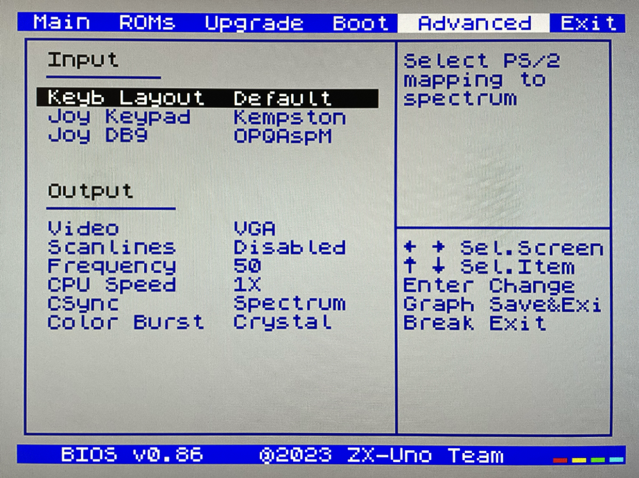
From the Advanced screen you can configure:
-
Keyboard layout (Keyb Layout): For more informaiton, see the corresponding section.
-
Controller behaviour connected to the right port (DE9) and also the emulated controller using the numeric keypad (Joy Keypad): Kempston, Sinclair 1, Sinclair 2, Protek, Fuller or simulate the keys
Q,` A`O,` P`SpaceandM. -
behaviour of a controller connected to the left port (DE9): Kempston, Sinclair 1, Sinclair 2, Protek, Fuller or simulate the keys
Q,` A`O,` P`SpaceandM. -
Video output: PAL, NTSC or VGA (DisplayPort is always active).
-
Scanline simulation: enabled or switched off.
-
VGA horizontal frequency: 50, 51 and so on.
-
CPU speed: Normal (1X) or accelerated (2X, 3X and so on).
-
Csync: Spectrum or PAL.
Exit

From the Exit screen you can:
-
Exit BIOS configuration saving changes (in some cases a power cycle is also required).
-
Discard changes and exit.
-
Save changes without exiting.
-
Discard changes.
ZX Spectrum
The main core is the one implementing a ZX Spectrum computer. This core is special and can’t be replaced with another that’s not a ZX Spectrum because the ZXTRES uses it for its operation.
Some of its main characteristics include:
-
ZX Spectrum 48K, 128K, +3, Pentagon and Chloe 280SE implementation.
-
ULA with ULAplus, Timex and Radastanian modes (including hardware scroll and selectable palette group).
-
Memory contention select (for Pentagon 128 compatibility).
-
Keyboard behaviour select (issue 2 or issue 3).
-
ULA timing select (48K, 128K or Pentagon).
-
Control of screen framing configurable for type of timing and possibility to choose between original Spectrum synchronisms or progressive PAL standard.
-
Timex horizontal MMU support with HOME, DOC and EX banks in RAM.
-
Programmable raster interrupt on any TV line.
-
Memory bank management register select for better compatibility with each implemented model.
-
Activate or deactivate the devices incorporated into the core to improve compatibility with certain programs.
-
ZXMMC and divMMC support for +3e, esxDOS and compatible firmwares (such as UnoDOS 3).
-
TurboSound-AY support.
-
SpecDrum support.
-
Each channel (A, B and C) of the two AY-3-8912, beeper and SpecDrum chips can be directed to the left, right, both or neither outputs enabling the implementation of configurations such as ACB, ABC and so on.
-
Real controller and keyboard-emulated controller support with Kempston, Sinclair 1 and 2, Cursor, Fuller and QAOPSpcM protocol.
-
Turbo mode support at 7 MHz, 14 MHz and 28 MHz.
-
Keyboard support (PS/2 protocol) and user-configurable mapping from within the ZX Spectrum core itself.
-
PS/2 mouse support emulating the Kempston Mouse protocol.
-
Video output in RGB 15 kHz, VGA and DisplayPort.
-
User selectable vertical refresh rate to improve compatibility with VGA monitors.
-
Multicore boot support: from the ZX Spectrum core you can select an address of the SPI Flash and the FPGA will load a core from there.
-
Different colour modes including monochrome.
-
I2S and Sigma-Delta audio output.
-
Wi-fi Support (UART) using the middle board.
-
MIDI Support (General MIDI) using the middle board.
-
RTC Support using the middle board.
-
PZXfile loading from microSD card emulating tape audio. -
Multiple deinterlacing modes for DisplayPort including an option to blend the colours. This is only available for ZXTRES+ and ZXTRES++ core versions.
ROMs
The ZX Spectrum core can be initialized using different ROM versions (48K, 128K, +2 and so on). These are stored in the flash memory of the ZXTRES and you can choose which one to load by pressing the Esc key during boot. You can also define the ROM that you want to load by default using the BIOS setup.
For more information on how to expand or modify the ROMs stored in flash memory, see the updates section.
DerbyPro
DerbyPro or Derby++ is an enhanced firmware ROM for the ZX Spectrum based on v1.4 of the Derby development ROM. The Spectrum 128 (codename "Derby") was a Spanish machine commissioned by Investronica and launched in 1985. It came with a keypad that provided additional editing keys. In 1986 the UK version came out with a simplified version of 128 BASIC and no keypad. Derby++ is developed from the Spanish ROM to include the benefits of both versions without the drawbacks and support for new hardware developments.

Features include:
-
100% binary compatible 48K mode.
-
6-channel PLAY commmand.
-
Access the esxDOS NMI browser from the boot menu.
-
Debugged 128 BASIC with additinoal commands and full scren string editor.
-
esxDOS support in 128 BASIC.
-
Menu access to TR-DOS.
-
PALETTE command for ULAplus.
-
Run most Spectrum software without the need to switch configuration in the BIOS.
You can download the ROM, a user manual and other files from the official Facebook Public Group.
Because it’s a 64K ROM with support for new hardware these flags can be used when adding it to the SPI flash:
Flag |
Meaning |
|
Enable divMMC |
|
Enable NMI divMMC (esxDOS Menu) |
|
Use 128K timings |
CargandoLeches
CargandoLeches is a set of ZX Spectrum ROMs that started as a project to load games in any Spectrum model 15 to 20 times faster. No tape is needed but a digital audio source such as a computer, mobile device, MP3 player and so on is required. The new ROM detects the loading method and reverts to the original ROM code if required. This is handled transparently with no user or program intervention.
From version 2.0 the project changed from a single ROM to more; each one with different options. This way you can choose a different mix of options that may include:
-
Enable or switch off Sinclair BASIC token expansion.
-
POKE editor.
-
Reset & Play (After a sofware reset of the core the system is ready to load from tape).
-
Ultrafast loading.
The whole ROM set is available to download from the repository in GitHub here.
Depending on which ROM you choose the flags when adding to the SPI flash may vary. For example, for the ROM 48le_ea_re_po (with all features enabled) these flags can be used (you can’t enable NMI-DivMMC because the POKE editor uses the NMI):
Flag |
Meaning |
|
Enable divMMC |
|
Switch off ROM high bit (1FFD bit 2) |
|
Switch off ROM low bit (7FFD bit 4) |
|
Switch off Timex mode |
POKEs
When using a ROM with POKE option enabled:
-
After the game is loaded, press
F5(NMI button). A dialog is displayed in the upper left corner of the screen -
Enter the POKE address and press
Enter. -
Enter the POKE value and press
Enteragain. -
Repeat steps 2 and 3 until all desired POKEs are entered. To finish and return to the game press
Entertwice.
Preparing ultrafast loading tapes
The ROMs with ultrafast loading enabled need special tape audio data that is made from normal loading TAP files without protections or turbo loading.
To create an ultrafast loading tape you need the leches and CgLeches command line utilities. Those can be obtained for Windows from the
official repository. You can also obtain an unofficial version for macOS from this other repository.
Otherwise you can compile from the source code at the official repository. For example, in Linux to compile using gcc you only need these commands:
gcc leches.c -o leches
gcc CgLeches.c -o CgLechesTo create an ultrafast loading tape you must use the CgLeches command from a terminal giving at least the path to the original TAP file and the new file to create (WAV or TZX). There are also some other optional parameters such as the loading speed between 0 and 7 (where 0 is fastest but also more incompatible), if you want to create a mono or stereo file (when making a WAV) and more.
To make a WAV file with an ultrafast loading tape from the file Valley.tap with loading speed 5 you could enter:
(...) CgLeches Valley.tap Valley.wav 5This way the file Valley.wav can be played from a computer or another device and load using the ROM (see the section about loading from tape for more info).
SE Basic IV
SE Basic IV is a free open-source BASIC interpreter for the Z80 architecture. Although it aims for a high degree of compatibility with Microsoft BASIC, there are some differences. It’s designed to run on the Chloe 280SE but it’s also compatible with the ZX Spectrum core of the ZXTRES.
SE BASIC began development in 1999 as the firmware for the ZX Spectrum SE, the ancestor of the Chloe 280SE. Early versions were patches applied to the original Spectrum ROM. From version 1, it used its own assembly file. From version 2, it added support for ULAplus.
Version 3 (OpenSE BASIC) replaced the original ROM code with an open source version derived from the ZX81 and SAM Coup ROMs. It’s still maintained as an open source replacement firmware for the Spectrum, and is included in the main Debian repository for use with emulators.

Version 4.0 added support for 80 column mode. Version 4.1 was an unsuccessful attempt to refactor the code. Starting in 2019, the latest version (4.2 Cordelia) was rebuilt from the ground up to take full advantage of the ZX Spectrum core of the ZX-Uno (and ZXTRES). While earlier versions retained a high level of compatibility with Sinclair BASIC and software, this version has no support for Sinclair software and is closer in dialect to Atari BASIC.
Version 4.2 requires that divMMC support is enabled with esxDOS or UnoDOS 3 installed. However, "dot" command commands and the NMI browser are not supported.
Features include:
-
40 column (16 colour) and 80 column (2 colour) paletted video modes.
-
Always-on expression evaluation (use variables as filenames).
-
Application package format with support for turning BASIC programs into apps.
-
Automatic data typing.
-
Bitwise logic (AND, NOT, OR, XOR).
-
Built-in help system.
-
Choice of Microsoft (LEFT$, MID$, RIGHT$) or Sinclair (TO) string slicing.
-
Composable characters (supports Vietnamese).
-
Disk-based filesystem (no tapes).
-
Error handling (ON ERROR…, TRACE).
-
Flow control (IF…THEN…ELSE, WHILE…WEND).
-
Full random file access from BASIC (OPEN, CLOSE, SEEK).
-
Full-size keyboard support (DEL, HOME, END and so on).
-
Graphics commands in 40 column mode (CIRCLE, DRAW, PLOT).
-
Localisation of character sets, error messages, and keyboard layouts.
-
Long variable names.
-
Motorola style number entry (%; binary, @; octal, $; hexadecimal).
-
NMI BREAK.
-
On-entry syntax checking.
-
PLAY command with 6-channel PSG and MIDI support.
-
Recursive user-defined functions.
-
Smart firmware updates.
-
Token abbreviation and shortcuts (&; AND, ~; NOT; |; OR, ?; PRINT, '; REM').
-
Undo NEW (OLD).
-
User-defined channels.
-
User-defined character sets (256 characters).
-
User-defined macros.
-
User-defined screen modes.
|
For the smart firmware update option to work, SE Basic IV must be installed in the second and third 16K ROM slots. |
|
Using the smart firmware update feature replaces the version of esxDOS you’re using with the latest version of UnoDOS 3. |
Other ROMs
Here are flag settings that work when adding to the SPI flash some other known custom ROMs:
ROM Name |
Flags |
Arcade Game Designer 0.1 |
thl17x |
Gosh Wonderful ROM v1.33 |
dnhl17x |
Looking Glass 1.07 |
dnhl17x |
ZX82 by Daniel A. Nagy |
dnhl17 |
ZX85 by Daniel A. Nagy |
dntmh1 |
microSD advanced format (+3e)
The ZX Spectrum +3e ROM can be used with the ZX Spectrum core. This is an improved Sinclair ZX Spectrum +3 ROM that can use microSD cards and other media.
The +3e uses its own partition format (called IDEDOS) to split the hard disk into several partitions to store data. ROM version 1.28 and later can share IDEDOS partitions with MBR partitions. Otherwise you must reserve the whole microSD card for the IDEDOS partitions.
|
This partition scheme can only be used with the ZX Spectrum core. |
|
Each partition in IDEDOS can be between 1 and 16MB (16 million bytes) in size and each disk can have between 1 and 65535 partitions. This means that the maximum space used in a microSD card is about 1TB. |
This is one method to split a microSD card into two or three parts with the first partition IDEDOS (1GB) the second one FAT16 (4GB) and the third one FAT32 (using the remaining space in the microSD card).
exsDOS and other programs can be installed into the second partition as explained earlier.
Windows
You can use Windows Disk Management utility. The steps are:
-
Remove all partitions from the microSD card.
-
Create a new extended partition using the desired space for IDEDOS.
-
Create a primary partition 4GB in size and format as FAT16.
-
Optionally create another primary partition using the remaining space and format as FAT32.
macOS
You need to use the command line. The first task is to find out which device is the disk to format:
diskutil listFor this example it’s disk 6:
(...)
/dev/disk6 (external, physical):
#: TYPE NAME SIZE IDENTIFIER
0: FDisk_partition_scheme *15.9 GB disk6
1: DOS_FAT_32 UNKNOWN 15.9 GB disk6s1Instruction steps:
-
Unmount the disk and edit the partition sceme (the second step requires admin privileges):
diskutil unmountDisk /dev/disk6
sudo fdisk -e /dev/rdisk6fdisk: could not open MBR file /usr/standalone/i386/boot0: No such file or directory
Enter 'help' for information
fdisk: 1> erase
fdisk:*1> edit 1
Partition id ('0' to switch off) [0 - FF]: [0] (? for help) 7F
Do you wish to edit in CHS mode? [n]
Partition offset [0 - 31116288]: [63] 128
Partition size [1 - 31116287]: [31116287] 2017152
fdisk:*1> edit 2
Partition id ('0' to switch off) [0 - FF]: [0] (? for help) 06
Do you wish to edit in CHS mode? [n]
Partition offset [0 - 31116288]: [2017280]
Partition size [1 - 29099135]: [29099135] 7812504
fdisk:*1> flag 2fdisk:*1> edit 3
Partition id ('0' to switch off) [0 - FF]: [0] (? for help) 0B
Do you wish to edit in CHS mode? [n]
Partition offset [0 - 31116288]: [9829784]
Partition size [1 - 21286504]: [21286504]
fdisk:*1> print
Starting Ending
#: id cyl hd sec - cyl hd sec [ start - size]
------------------------------------------------------------------------
1: 7F 1023 254 63 - 1023 254 63 [ 128 - 2017152] <Unknown ID>
2: 06 1023 254 63 - 1023 254 63 [ 2017280 - 7812504] DOS > 32MB
3: 0B 1023 254 63 - 1023 254 63 [ 9829784 - 21286504] Win95 FAT-32
4: 00 0 0 0 - 0 0 0 [ 0 - 0] unused
fdisk:*1> write
fdisk: 1> quit-
Format the FAT partitions (admin privileges required):
diskutil unmountDisk /dev/disk6
sudo newfs_msdos -F 16 -v ZXTRES -c 128 /dev/rdisk6s2
sudo newfs_msdos -F 32 -v EXTRA -c 128 /dev/rdisk6s3-
Confirm that the new partition scheme was applied:
diskutil list(...)
/dev/disk6 (external, physical):
#: TYPE NAME SIZE IDENTIFIER
0: FDisk_partition_scheme *15.9 GB disk6
1: 0x7F 1.0 GB disk6s1
2: DOS_FAT_16 ZXTRES 4.0 GB disk6s2
3: DOS_FAT_32 EXTRA 10.9 GB disk6s3Linux
You can use the command line. First find out the device to erase:
lsblkFor this example it’s sdc:
NAME MAJ:MIN RM SIZE RO TYPE MOUNTPOINT
(..)
sdc 179:0 0 15,8G 0 disk
sdc1 179:1 0 15,8G 0 partInstructions:
-
Verify that the disk isn’t mounted and edit the partition scheme (this step requires root privileges):
sudo fdisk --compatibility=dos /dev/sdcWelcome to fdisk
Changes will remain in memory only, until you decide to write them.
Be careful before using the write command.
Command (m for help): n
Partition type
p primary (0 primary, 0 extended, 4 free)
e extended (container for logical partitions)
Select (default p): p
Partition number (1-4, default 1): 1
First sector (62-31116288, default 62): 128
Last sector, +/-sectors or +/-size{K,M,G,T,P} (128-31116288, default 31116288): 2017152
Created a new partition 1 of type 'Linux'
Command (m for help): t
Selected partition 1
Hex code (type L to list all codes): 7f
Changed type of partition 'Linux' to 'unknown'.
Command (m for help): n
Partition type
p primary (1 primary, 0 extended, 3 free)
e extended (container for logical partitions)
Select (default p): p
Partition number (2-4, default 2):
First sector (45-31116288, default 45): 2017280 .
Last sector, +/-sectors or +/-size{K,M,G,T,P} (2017153-31116288, default 31116288): 7812504
Created a new partition 2 of type 'Linux'
Command (m for help): t
Partition number (1,2, default 2): 2
Hex code (type L to list all codes): 6
Changed type of partition 'Linux' to 'FAT16'.
Command (m for help): a
Partition number (1,2, default 2): 2
The bootable flag on partition 2 is enabled now.
Command (m for help): n
Partition type
p primary (2 primary, 0 extended, 2 free)
e extended (container for logical partitions)
Select (default p): p
Partition number (3-4, default 3): 3
First sector (45-31116288, default 45): 9829784 .
Last sector, +/-sectors or +/-size{K,M,G,T,P} (2017153-31116288, default 31116288): 31116288
Created a new partition 3 of type 'Linux'
Command (m for help): t
Partition number (1-4, default 3): 3
Hex code (type L to list all codes): b
Changed type of partition 'Linux' to 'W95 FAT32'.
Command (m for help): p
Disk /dev/sdc
Disklabel type: dos
Disk identifier
Device Boot Start End Sectors Size Id Type
/dev/sdc1 128 2017152 2017025 984,9M 7f unknown
/dev/sdc2 * 2017280 7626751 7812504 2,7G b FAT16
/dev/sdc3 9829784 7626751 21286504 21G b W95 FAT32-
Format both FAT partitions (requires root privileges):
sudo mkfs.fat -F 16 -n ZXTRES -s 128 /dev/sdc2
sudo mkfs.fat -F 32 -n EXTRA -s 128 /dev/sdc3-
Confirm that the partition scheme was changed:
lsblkNAME MAJ:MIN RM SIZE RO TYPE MOUNTPOINT
(...)
sda 179:0 0 15,8G 0 disk
sda1 179:1 0 1G 0 part
sda2 179:2 0 4G 0 part
sda3 179:3 0 10,8G 0 part+3e
After the microSD card is ready to use you can start the ZX Spectrum core with a +3e ROM and format the IDEDOS part.
The first step is determine the disk geometry. With the microSD card inserted into the ZXTRES enter the command:
CAT TABThis gives a result showing the number of cylinders heads and sectors.
With this information you estimate the size of your partition using cylinders. For example, if the number of cylinders is 32768 and you want to use 1GB of a 16GB microSD card, the number of cylinders needed would be 32768/16=2048. This way the IDEDOS partition can be formatted using that number:
FORMAT TO 0,100,2048The first value (0) is the drive to use (the first one). The second value is the maximum number of IDEDOS partitions. The third one is the number of cylinders to use.
After formatting, you can create new partitions. For example, to create a 16MB partition called "Software", a 4GB partition called "Swap" (to use as swap disk) and an 8MB partition called "Utils":
NEW DATA "Software",16
NEW EXP "Swap1",4
NEW DATA "Utils",8For more information about the different +3e disk commands refer to this page at World of Spectrum.
esxDOS commands
Overview
There are two different kind of esxDOS commands: the so-called "dot" commands that, as the name suggests, begin with a dot (.), and extensions to existing BASIC commands.
The main "dot" commands are:
-
128: Enter 128 mode from within 48 mode. -
cd: Change current working folder. -
chmod: Change file attributes. -
cp: Copy a file. -
divideo: Play a divIDEo (DVO) video file (divIDE only). -
drives: Show currently available drives. -
dskprobe: Utility that shows low level content of an storage device. -
dumpmem: Can dump RAM memory content to a file. -
file: Tries to recognise the type of data contained in a file (like the UNIX command). -
gramon: Monitor to search graphics sprites fonts and so on in RAM memory. -
hexdump: Shows the contents of a file using hexadecimal notation. -
hexview: Allow to see and navigate through the contents os a file using hexadecimal notation. -
launcher: Creates a shortcut (launcher) to open directly aTAPfile. -
ls: Show the content of a folder. -
lstap: Show the content of aTAPfile. -
mkdir: Create a folder. -
mktrd: Create aTRDdisk file. -
more: Show the content of a text file. -
mv: Move a file. -
partinfo: Show partition information of an storage device. -
playpt3: PlayPT3music file. -
playsqt: PlaySQTmusic file. -
playstc: PlaySTCmusic file. -
playtfm: PlayTFCmusic file. -
playwav: PlayWAVaudio file. -
rm: Remove a file or a folder. -
snapload: Load snapshot file. -
speakcz: Read text aloud using Czech pronunciation. -
tapein: Mounts aTAPfile so that it can be used then from BASIC using LOAD sentence. -
tapeout: Mount aTAPfile so that it can be used then from BASIC using SAVE sentence. -
vdisk: Mount aTRDdisk file to use with the TR-DOS environment (after all drives have been mounted you can enter TR-DOS emulation by typing:RANDOMIZE USR 15616).
Some BASIC extended commands are:
-
GO TOto change the current drive or folder (for example:GO TO hd1orGO TO hd0"GAMES"). -
CATto show the content of a drive. -
LOADto lad a file from a drive (BASIC Program SCREEN CODE and so on for exampleLOAD *"Screen.scr" SCREEN$). -
SAVEto save data in a file (for example,SAVE *"PROGRAM.BAS"). -
ERASEto remove a file.
In addition esxDOS supports an NMI browser that loads when the NMI is activated (F5 is pressed). This enables you to browse the microSD card and easily load files (TAP, Z80, TRD and so on). In the default NMI browser, pressing the H key invokes a help screen that shows all available key commands.
|
Don’t use any FAT reordering utility if the microSD card is also being used with a PC XT core because it may stop DOS from booting. |
ZXTRES Commands
As noted in the installation section, there are a several "dot" command commands that are exclusive to the ZXTRES:
-
back16m: Dumps to aFLASH.ZX1file in the root folder of the microSD card the contents of a 16 Meg SPI Flash memory. After the command is done, you must enter.lsso that the cache is written to the microSD card. Otherwise the length of the file is wrongly set to 0. -
backzx2orbackzxd: Creates aFLASH_32.ZX2orFLASH_32.ZXDfile in the root folder of the microSD card with the contents of a 32 Meg SPI Flash memory. After the command is done, you must enter.lsso that the cache is wrtten to the microSD card. Otherwise the length of the file is wrongly set to 0. -
core: Restarts the FPGA and loads the specified core from the SPI Flash -
corebios: Simultaneously update the ZX Spectrum core and BIOS. -
dmaplayw: Play aWAVfile that is 8-bits unsigned and sampled at 15625 Hz. -
esprst: Reset the WiFi ESP8266(ESP-12) module. -
iwconfig: Configure the WiFi module. -
joyconf: Configure and test for keyboard and DE9 controllers. -
keymap: Load a different keyboard map definition. -
loadpzx: Load aPZXtape file. -
loadtap: Load aTAPfile using thePZXintegration. -
playmid: Play aMIDmusic file using the for middle board. -
playrmov: Play radastanian format video filesRDM). This command doesn’t work in 48K mode. -
romsupgr: Load from a RomPack filel calledROMS.ZX1in the root folder of the microSD card all ZX Spectrum core ROMS into SPI flash memory. -
upgr16m: Load the content of aFLASH.ZX1file in the root folder of the microSD card to a 16 Meg SPI Flash memory. -
upgrzx2orupgrzxd: Write the content of aFLASH_32.ZX2orFLASH_32.ZXDfile in the root folder of the microSD card to a 32 Meg SPI Flash memory. -
zxuc: Configure all options of BIOS that also can be stored in the microSD in configuration files that can be loaded later (available to download from Utodev repository). -
zxunocfg: Configurae certain features such as timings contention keyboard type CPU speed video type or vertical frequency.
|
The |
|
Most of these commands are available to download from ZXTRES official repository or ZX-Uno repository. |
Wi-Fi
The optional middle board includes an ESP-12 Wi-Fi ESP8266 chip. To communicate with the chip, a core that synthesize a UART device, (such as the EXP28 290723 ZX Spectrum core) is required.
There are two "dot" command commands for configuring software access to the module. They can be downloaded from GitHub official repository:
-
esprstrestarts the module. -
iwconfigregisters the Wi-Fi network name (SSID) and password, keeping them in the file/sys/config/iw.cfgfor other programs to use.
For example:
.iwconfig mywifi mypassword|
All the Wi-Fi software (explained later) is available with the ZX-Uno distributions by desubikado. |
Network tools for ZX-Uno pack
These ZX Spectrum programs, developed by Nihirash, are available from his website:
-
netman: Configures the ESP Wi-Fi chip for other programs from Nihirash. It doesn’t work in 48K mode. Available to download from GitHub. -
Moon Rabbit: Gopher client. Doesn’t work in 48K mode. Available to download from GitHub. -
irc: Internet Relay Chat client. Works better at 14 MHz CPU clock. -
wget: Utility to download files with HTTP (does not work with HTTPS) -
platoUNO: PLATO client. Also works better at 14 MHz CPU clock. For more information about PLATO, refer to the IRATA.ONLINE website.
FTP-Uno
FTP client developed by Yombo, available from GitHub.
Configuration steps:
-
Edit
FTP.CFGfile with all the required information (SSID and password, FTP server, and so on). -
Copy
FTP.CFGinside the/SYS/CONFIG/folder on the microSD card. -
Copy
ftpUno.tapto any folder on the card. -
Power on the ZXTRES and load the tape file
ftpUno.tap
UART Terminal
Program example included with ZXYLib C library, developed by yombo, that let’s you send directly typed characters using the UART, and also see the result. Available to download from this link.
After the file UARTTERM.tap is in the card and loaded, you can type several specific commands for ESP8266 chip. For example:
-
AT: Check communication. ReturnsOKif everything is working. -
AT+RST: Restart the chip, like theesprstcommand. -
AT+GMR: Display information such as firmware version and so on. -
AT+CWMODE_CUR=1: Temporarily put the chip into Wi-Fi client mode until the next restart. -
AT+CWMODE_DEF=1: Put the chip into Wi-Fi client mode, and save it as the default in the chip flash memory. -
AT+CWJAP_CUR="<WiFiNetwork>","<WiFiPassword>": Temporarily connect to a network where<WiFiNetwork>is the Wi-Fi ID and<WiFiPassword>is the access password. -
AT+CWJAP_DEF="<WiFiNetwork>","<WiFiPassword>": Connect to a network, and saves the settings as default in the chip flash memory. -
AT+CWAUTOCONN=1: Set the chip to connect automatically on boot to the default network (AT+CWAUTOCONN=0deactivates it).
For full details of all the available commands, refer to the official documentation.
MIDI
The optional middle board also has a built-in https://www.raspberrypi.com/documentation/microcontrollers/raspberry-pi-pico.html%23rp2040-device [RP2040 microcontroller] programmed to work as a GM-MIDI synthesizer. This can be used with a core that enables communication with the module (such as the EXP28 290723 ZX Spectrum core).
You can use the "dot" command .playmid to listen to MIDI files in the supported format (FIXME).
|
Sometimes To remedy this, change the CPU speed with the |
It is also possible to use MIDI with the 128 BASIC PLAY command. You can access 128 BASIC from the DerbyPro ROM. If you are using a 128K Spectrum ROM, deactivate the microSD card in the BIOS or using the "dot" command .zxuc command. This command plays a musical scale with the sound of a piano:
PLAY "T160","","","Y1Z192Z0V15O5cdefgabC"|
Changing |
The PLAY command in SE Basic IV also supports MIDI, but it has a different syntax.
Bob Fossil NMI Browser
To use https://www.zxuno.com/forum/viewtopic.php?f=39&t=4011 [Bob Fossil’s NMI Browser] to play MIDI you need:
-
.playmid"dot" command command installed. -
The latest browser stable version.
-
Browser MID plugin.
Copy the corresponding .MID file to the desired location on the microSD card, together with the appropriate MID plugin file (in the BIN/BPLUGINS folder) and the "dot" command playmid command file (in the BIN folder).
-
Start the ZXTRES ZX Spectrum core.
-
Press
F5to open Bob Fossil’s NMI browser and then navigate to the location of the.MIDfile, select it and pressEnter`.
You can press Space to stop playback at any time.
ZX MIDI player
This ZX Spectrum program was developed by Eugene Lozovoy and has the following features:
-
Compatible with MID(SMF) file formats type 0, type 1 and RMI;
-
Supports files up to 64Kb.
-
Support for up to 60 tracks in a file (for heavier files, a turbo CPU frequency is desirable).
-
Support for multiple CPU frequencies - 3.5 MHz, 3.54 MHz, 7 MHz, 14 MHz, 28 MHz.
-
Support for divMMC (and derivatives), ZXMMC, Z-Controller- FAT32 file system support.
RTC
Creating RaDastanian movie files
The playrmov "dot" command command plays Radastanian format (RDM) video files. To convert your own videos you need makevideoradas, a utility that’s available at this SVN repository.
If you’re using Windows there’s already an executable file (makevideoras.exe). For Linux or macOS you must have the command line developer utilities installed to compile an executable.
gcc makevideoradas.c -o makevideoradasApart from makevdideoradas you need another two tools: ffmpeg and imagemagick. These can be installed with a package manager (apt yum pacmam brew and so on) or downloading the source code and compiling.
The first step to convert your video (for example myvideo.mp4) is exporting the frames as 128x96 pixel BMP image files. You can create a temporary file (img for this example) to store them.
mkdir img
(...)/ffmpeg -i myvideo.mp4 -vf "scale=128:96,fps=25" -start_number 0 img/output%05d.bmpNow you can transform the BMP files to 16 colours (v3) BMP files.
(...)/magick mogrify -colours 16 -format bmp -define bmp:format=bmp3 img/*.bmpLast you can assemble the RDM file (in this example myvideo.rdm) and cleanup the temporary files and folder.
(...)/makevideoradas img/output
mv img/output.rdm ../myvideo.rdm
rm -rf imgFor more information about this process refer to this thread in Zona de Pruebas forums.
Upgrade
BIOS
To update the BIOS, a file called FIRMWARE.ZX3 must be obtained. The latest version of the firmware files can be downloaded from the official repository.
|
Updating the firmware (BIOS) is delicate. It shouldn’t be done if it’s not necessary. When doing so, ensure that the ZXTRES has uninterrupted power (such as a UPS or a laptop USB with battery). |
Copy the file to the root of the microSD card, power on and press F2 to enter BIOS. Select Upgrade. Choose "Upgrade BIOS for ZX" and then "SDfile". The system reads the file FIRMWARE… and notifies you when it’s done.
ROMs
The flash memory of a ZXTRES has 64 reserved slots of 16K each to store ZX Spectrum core ROM images. Thus an original ZX Spectrum ROM (16K) uses one slot, a ZX Spectrum 128 ROM (32K) uses two slots and a ZX Spectrum +3 ROM (64K) uses four slots.
You can add a new ROM pressing the key N at the BIOS ROMs screen, connecting an audio cable to the board and loading a ROM from an audio player. ROM audio tapes can be made from a TAP file built with the GenRom utility available at the ZX-Uno Code Repository.
To update all ROMs installed for the ZX Spectrum core in one go, a RomPack file called ROMS.ZX1 must be obtained that must be copied to the microSD card. Boot the ZXTRES and then enter .romsupgr. This overwrites the existing set of ROMs with those contained in the file.
|
Currently, |
RomPack files can be easily edited with the ZX1RomPack utility. Although it’s a Windows program it works perfectly for example using Wine or similar programs either on Linux and macOS versions with 32-bit Intel support..
Cores
A core is a file with the information needed to configure the FPGA to behave like a specific system (ZX Spectrum and so on). In the ZXTRES this file can be loaded from several different places: the SPI Flash memory, a microSD card or from an external device (PC and so on) using a special cable.
microSD card
Loading from the ZX Spectrum core
From the main ZX Spectrum core it’s possible to load other cores.
Bob Fossil NMI browser
To use the Bob Fossil NMI browser to load cores you need:
-
The latest stable version (http://www.thefossilrecord.co.uk/wp-content/uploads/zx/BROWSE_latest.zip).
-
The ZX3 plugin that can load Cores in ZX3 format https://github.com/zxdos/zxuno/blob/master/SD/BIN/BPLUGINS/ZX3.
Copy the corresponding ZX3 file to the desired location of the microSD card as well as the appropriate ZX3 plugin (in the folder BIN/BPLUGINS).
Press F5 to open Bob Fossil’s NMI browser and get to the location of the Core with extension ZX3, select it and press Enter.
If everything worked correctly, the bottom of the screen indicates the flashing progress (it’s recorded in a temporary slot of the flash memory).
Bob Fossil NMI browser (with Middle Board)
The optional middle board has a built-in https://www.raspberrypi.com/documentation/microcontrollers/raspberry-pi-pico.html%23rp2040-device [RP2040 microcontroller] programmed to read from the microSD and perform direct loading of cores into the FPGA.
In order to use https://www.zxuno.com/forum/viewtopic.php?f=39&t=4011 [Bob Fossil’s browser for this type of loading], the following is required:
-
The latest stable version
-
The BIT plugin to to load Cores in BIT format (https://github.com/zxdos/zxuno/blob/master/SD/BIN/BPLUGINS/BIT).
Copy the corresponding .BIT file to the desired location on the microSD card, as well as the BIT plugin file (inside the BIN\BPLUGINS folder).
-
Start the ZXTRES Spectrum core.
-
Press
F5to open the browser and then navigate to the location of the Core with.BITextension, select it and press ENTER.
If all goes well, after a few seconds, the core will be loaded into the FPGA and then the FPGA will be restarted to execute it.
SPI Flash Memory
There are 27 spaces where you can store cores, with the first spaces being reserved for the main ZX Spectrum (this doesn’t prevent having more ZX Spectrum cores in other spaces as well of the first ones).
Official cores are available to download from GitHub repository.
To update or install a new core in the SPI Flash there are several possibilities.
The first options is to obtain the latest version of the files that define the core. If the space used is greater than 1179648 bytes it must be split accordingly into several files. Each of these pieces must be a file called COREXXy.ZX3 where XX is always a two digit number. The y part of the name is ignored so you can use longer and more descriptive names (for example CORE04_example_part1.ZX3).
Copy the files to the root of the microSD card, power on and press F2 to enter the BIOS. Choose Upgrade, select the row corresponding to the chosen core space (for example 4), press enter and then " SD file ". The system reads the file COREnn .. and notifies you when it’s updated. However, first it asks for the name (to be shown in the list to choose from at startup and in the BIOS list). For cores using more than one space, typically the name of the core is only used for the first space and the remaining spaces are registered with some text warning not to use them. After it’s installed you can use the core on boot by choosing the first space used by the core.
|
The main ZX Spectrum core update is exactly the same as other cores but for the first part instead of the name |
esxDOS
To update esxDOS to a new version the distribution must be obtained from the official website.
After you’ve downloaded and extracted the ZIP archive, the contents of the BIN and SYS folders must be copied to the root of the microSD card partition merging with the existing ones (to preserve the exclusive ZXTRES commands).
Copy ESXMMC.BIN (or ESXMMC.ROM depending on version) to the root of the microSD card.
Power on the ZXTRES with the microSD card inserted and press F2 to access BIOS setup. Select the Upgrade menu and choose "Upgrade esxdos for ZX". In the dialog that appears choose "SD file" and when it asks "Load from SD" answer "Yes" to the question "Are you sure?". The content of the file ESXDOS… is read and written to the flash storage and you are notified when it’s updated.
Do a hard reset or power cycle the ZXTRES.
If everything was done correctly, when you start the ZX Spectrum core you’ll see esxDOS detect the microSD card and load the required components to work, showing the new version at the top.
Flash Memory
You also can update all FPGA flash memory. At this moment from the BIOS you can only use 16MiB image files. To use a 32MiB image you must use esxdos UPGRZXD command and a file called FLASH.ZXD.
Copy the image file (16MiB) FLASH.ZX3 to the root of the microSD card.
Power on the ZXTRES and press the F2 key during boot to access the BIOS setup. Select the menu Upgrade and then choos the option "Upgrade flash from SD". Press Enter choose Yes and press Enter again to start the Flash writing process.
Do a Hard-Reset or power cycle the ZXTRES.
|
This process can’t be undone and it replaces all previously installed cores, the BIOS, the ZX Spectrum ROMs and their configuration with the data in the image file. |
Other cores
Amiga minimig AGA
https://en.wikipedia.org/wiki/Commodore_Amiga [Commodore Amiga] was a personal computer marketed by Commodore International between 1985 and 1994. It was very popular due to its price and multimedia capabilities. Its system is unique in that it was the first multitasking and multimedia computer aimed at the general public.
The ZXTRES core is based on minimig (short for Mini Amiga), which is an open source re-implementation originally authored by Dennis van Weeren. The AGA variant has been updated with AGA chipset capabilities, allowing it to emulate newer Amiga models.
Some core characteristics are:
-
Chipset variants : OCS, ECS, AGA
-
chipRAM : 0.5MB - 2.0MB, SlowRAM : 0.0MB - 1.5MB and fastRAM : 0.0MB - 24MB
-
CPU : 68000, 68010, 68020
-
Kickstart support : 1.2 - 3.1
-
HRTmon
-
1-4 floppies with normal and turbo speeds
-
1-2 hard disk images
-
VGA video output emulating: PAL / NTSC
-
PS/2 mouse support
-
Only Sigma-Delta audio
microSD card format
A microSD card, with the first partition in FAT32 format, should be used to store all the necessary files. The 832OSDAD.BIN file available at ZXTRES cores repository should be copied to the root of the microSD card, together with an Amiga https://es.wikipedia.org/wiki/Kickstart [Kickstart] ROM file, named as KICK.ROM.
Optionally, to display an animation at the start of the core, you can also copy to the root the files minimig.art,minimig.bal and minimig.cop which can be obtained from the official Minimig AGA page for Turbo Chameleon 64.
It is also interesting to copy floppy disk image files (ADF) and/or WinUAE virtual hard disk files (HDF) to the microSD.
If not already there, install or run the Amiga (minimig) core on the ZXTRES.
Keyboard
Special keys and buttons
When the core is active:
-
F12: show and hide the core control menu. -
Bloq. Num.: Turn on or off the use of the numeric keypad as a mouse.
Overview
Press F12 to display the menu with different core options. Cursor keys and Enter to select and choose menu options.
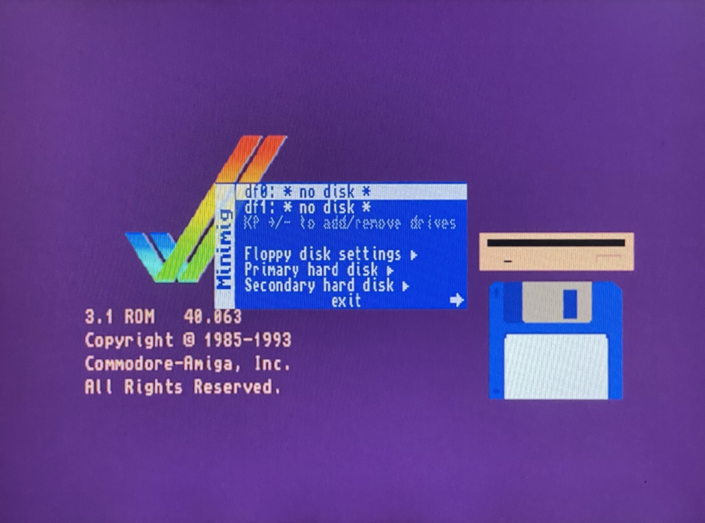
These are the main ones:
-
df0,df1, and so on: To select anADFfloppy disk image. -
Floppy Disk Settings: For setting the number of floppy disks and other options.
-
Primary Hard Disk: To configure where the primary disk data is located (usually an
HDFfile). -
Secondary Hard Disk
Secondary Hard Disk: To configure where the data on the secondary disk is located. -
Exit`: Exits the configuration menu.
Using the arrow keys on your keyboard you can access more configuration options:
-
Load Configuration: To load configuration data saved previously -
Save Configuration: To save the current configuration. If this is done in the default space (`default), it is the one that will be used every time the core is started. -
Chipset Settings: Here you can choose the CPU, turbo mode, video type (PAL or NTSC), Chipset to simulate. -
Memory Settings`: To configure the different amounts of RAM memory, as well as the ROM file to be used. -
Video Settings`: To activate or deactivate video filters, deinterlacing, etc. -
Reset: Resets the core to the default settings. -
Reboot: Reboot the core with the current settings.
Amstrad CPC 464
The Amstrad CPC 464 was the first of a series of 8-bit home computers produced by Amstrad. The ZX-Uno version has been made by McLeod.
The ZXTRES core has been developed by McLeod, starting from the original version for ZX-Uno, mainly as a documented example of how to port cores to ZXTRES.
Core features:
-
32KB ROM.
-
64KB RAM.
-
AY-3-8912 sound chip.
-
Colour module as described in Electronics Today UK, expanded with programmable border colour.
-
DisplaPort video output.
-
RGB PAL video output (using the VGA port).
-
Support for one controller
-
Tape loading using the audio input.
-
VGA video output (50 Hz).
-
Writable ROM memory (to install alternate ROMs).
-
I2S and Sigma-Delta audio
SD card format
This core does not use the SD card.
If not already there, install or run the Amstrad CPC core on the ZXTRES.
Special keys and buttons
When the core is active:
-
Del:CLR. -
Home: Scanlines on/off -
End: Select one of the monochrome colour modes. -
Print ScrorLeft Windows:COPY -
Scroll Lock: Switches between RGB (PAL) video mode and VGA (DisplayPort is always active). -
Ctrl+Alt+Delete: Soft Reset (resets the Core) -
Ctrl+Alt+Backspace: Hard reset (restart the FPGA). Backspace is the delete key located in the top-right portion of the keyboard aboveEnter.
Overview

When using BASIC, you can load a external tape or other external audio device with the command RUN".
Unlike the original machine, you can hear the audio while playing the tape.
Arcade (Capcom Play System 1)
CP System, CPS-1, or Capcom Play System 1 is an arcade system board made by Capcom, which was used for several arcade systems.
The ZXTRES core has been made by somhic, adapting the original version by Jotego.
Some core features:
-
Real controller and keyboard-emulated controller support.
-
RGB video output (using the VGA port).
-
VGA video output.
SD card format
The core needs files with the original arcade machine chips ROM images, merged into a single .ROM file, together with at least one .ARC file containing the name of the ROM file to be loaded, as well as the configuration of the DIP switches configuration for the original machine.
Both ROM and ARC files can be created using MRA Tool, taking as reference the MRA files available in the original core creator’s repository.
ARC and ROM files can be placed anywhere in the microSD card.
Special keys and buttons
-
F12: display the core control menu -
Cursor or controller 1: Player 1 directional controls
-
Ctrl,AltandSpaceor Controller 1: Player one buttons 1, 2 and 3 -
Z,X,Cor controller 1: Player one buttons 4, 5, 6 -
R,F,G,Dor controller 2: Player two movement -
A,SandQor controller 2: Player two buttons 1, 2 and 3 -
W,I,Kor controller 2: Player two buttons 4, 5, 6 -
1and2: to start game player 1 or player 2 -
5and6: to insert a coin -
P: Pause -
F3: Soft Reset (restarts the Core) -
F12(long press): Toggle between RGB and VGA mode
Overview
Press F12 to display the menu with the different core options. Cursor keys or the controller to choose menu options and Enter or the controller button 1 to select and choose menu options.

The following options are available:
-
Load ARC`: To load an ARC file from the microSD card. -
Rotate Controls: To rotate the text of the options menu, as well as the behavior of the directional controls. -
Video Mode: Only for VGA video output, to select different filters to the image. -
Sensitivity: Adjusts the sensitivity. -
DIP Switches: Access to view and modify the state of the DIP switches defined in the ARC file. -
Turbo: Enables or disables turbo mode. -
Original Filter: Applies (if defined) the original filter of the ROMs in use at that moment. -
Reset: Soft Reset (resets the Core). -
Exit: Closes the options menu.
Arcade (Double Dragon)
Double Dragon is a video game released for arcade machines in 1987, developed by Technos Japan.
The ZXTRES core has been made by somhic, adapting the original version by Jotego.
Some core features:
-
Real controller and keyboard-emulated controller support.
-
RGB video output (using the VGA port).
-
VGA video output.
SD card format
The core needs files with the original arcade machine chips ROM images, merged into a single .ROM file, together with at least one .ARC file containing the name of the ROM file to be loaded, as well as the configuration of the DIP switches configuration for the original machine.
Both ROM and ARC files can be created using MRA Tool, taking as reference the MRA files available in the original core creator’s repository.
ARC and ROM files can be placed anywhere in the microSD card. However, if there’s a directory named JOTEGO directory in the root of the card, and inside there are the ARC file named as JTDD.ARC, together with the corresponding ROM file, both will be loaded automatically when the core starts.
Keyboard
Special keys and buttons
-
F12: display the core control menu -
Cursor or controller 1: Player 1 directional controls
-
Ctrl,AltandSpaceor Controller 1: Player one buttons 1, 2 and 3 -
R,F,G,Dor controller 2: Player two movement -
A,SandQor controller 2: Player two buttons 1, 2 and 3 -
1and2: to start game player 1 or player 2 -
5and6: to insert a coin -
P: Pause -
F3: Soft Reset (restarts the Core) -
F12(long press): Toggle between RGB and VGA mode
Overview
Press F12 to display the menu with the different core options. Cursor keys or the controller to choose menu options and Enter or the controller button 1 to select and choose menu options.

The following options are available:
-
Load ARC`: To load an ARC file from the microSD card. -
Video Mode: Only for VGA video output, to select different filters to the image. -
Pause: Enters and exits pause mode. -
DIP Switches: Access to view and modify the state of the DIP switches defined in the ARC file. -
Turbo: Enables or disables turbo mode. -
Reset: Soft Reset (resets the Core). -
Exit: Closes the options menu.
Arcade (Kicker)
Kicker (or Shao-lin’s Road) is a video game released for arcade machines in 1985, by Konami.
The ZXTRES core has been made by somhic, adapting the original version by Jotego.
Some core features:
-
Real controller and keyboard-emulated controller support.
-
RGB video output (using the VGA port).
-
The video output keeps the original orientation.
-
VGA video output.
SD card format
The core needs files with the original arcade machine chips ROM images, merged into a single .ROM file, together with at least one .ARC file containing the name of the ROM file to be loaded, as well as the configuration of the DIP switches configuration for the original machine.
Both ROM and ARC files can be created using MRA Tool, taking as reference the MRA files available in the original core creator’s repository.
ARC and ROM files can be placed anywhere in the microSD card. However, if there’s a directory named JOTEGO directory in the root of the card, and inside there are the ARC file named as JKICKER.ARC, together with the corresponding ROM file, both will be loaded automatically when the core starts.
Keyboard
Special keys and buttons
-
F12: display the core control menu -
Cursor or controller 1: Player directional controls
-
Ctrl,AltandSpaceor Controller 1: Player buttons 1, 2 and 3 -
1and2: to start game one or two player games -
5and6: to insert a coin -
P: Pause -
F3: Soft Reset (restarts the Core) -
F12(long press): Toggle between RGB and VGA mode
Overview
Press F12 to display the menu with the different core options. Cursor keys or the controller to choose menu options and Enter or the controller button 1 to select and choose menu options.
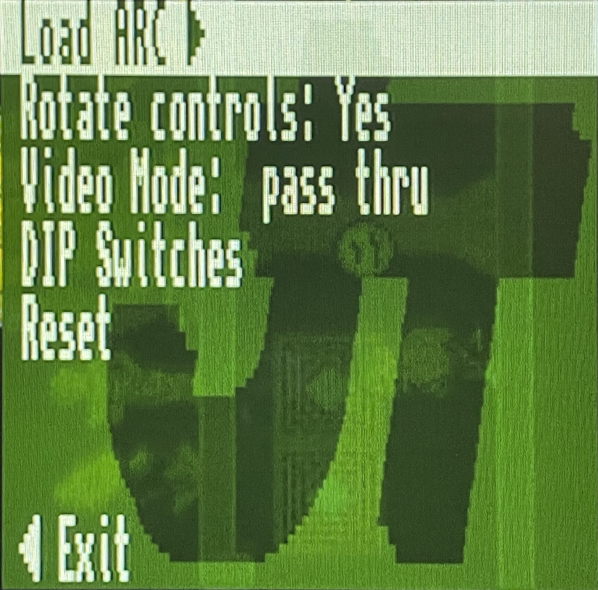
The following options are available:
-
Load ARC`: To load an ARC file from the microSD card. -
Rotate Controls: To rotate the text of the options menu, as well as the behavior of the directional controls. -
Video Mode: Only for VGA video output, to select different filters to the image. -
DIP Switches: Access to view and modify the state of the DIP switches defined in the ARC file. -
Reset: Soft Reset (resets the Core). -
Exit: Closes the options menu.
Arcade (Pang)
The https://en.wikipedia.org/wiki/Buster_Bros.[arcade version of Pang], known as Pang! and Pomping World is a one or two player game designed by Mitchell Corporation in 1989.
The ZXTRES core has been made by somhic, adapting the original version by Jotego.
Some core features:
-
Real controller and keyboard-emulated controller support.
-
RGB video output (using the VGA port).
-
VGA video output.
SD card format
The core needs files with the original arcade machine chips ROM images, merged into a single .ROM file, together with at least one .ARC file containing the name of the ROM file to be loaded, as well as the configuration of the DIP switches configuration for the original machine.
Both ROM and ARC files can be created using MRA Tool, taking as reference the MRA files available in the original core creator’s repository.
ARC and ROM files can be placed anywhere in the microSD card. However, if there’s a directory named JOTEGO directory in the root of the card, and inside there are the ARC file named as JTPANG.ARC, together with the corresponding ROM file, both will be loaded automatically when the core starts.
Keyboard
Special keys and buttons
-
F12: display the core control menu -
Cursor or controller 1: Player 1 directional controls
-
Ctrlor Controller 1 button 1: Player one button -
R,F,G,Dor controller 2: Player two movement -
Aor controller 2 button 1: Player two button -
1and2: to start one player or two player game -
5: to insert a coin -
P: Pause -
F3: Soft Reset (restarts the Core) -
F12(long press): Toggle between RGB and VGA mode
Overview
Press F12 to display the menu with the different core options. Cursor keys or the controller to choose menu options and Enter or the controller button 1 to select and choose menu options.
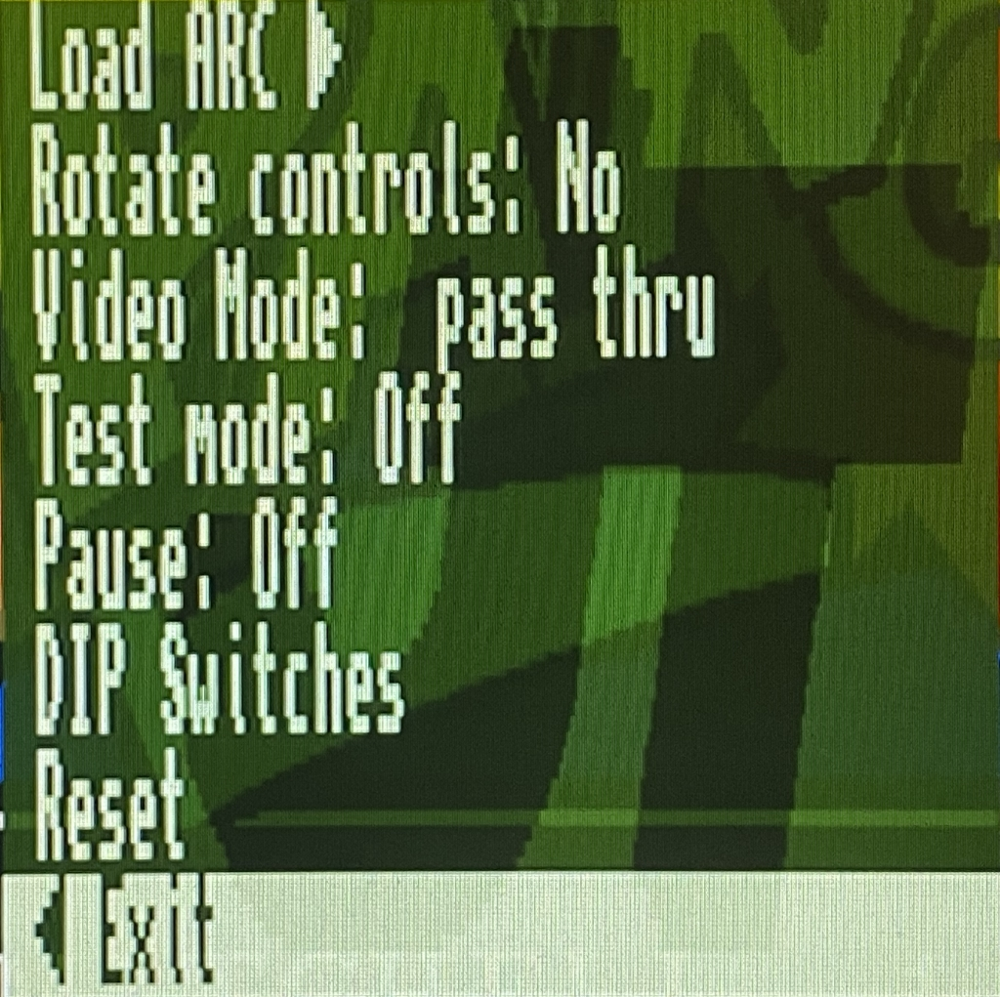
The following options are available:
-
Load ARC`: To load an ARC file from the microSD card. -
Rotate Controls: To rotate the text of the options menu, as well as the behavior of the directional controls. -
Video Mode: Only for VGA video output, to select different filters to the image. -
Test Mode: To enable or disable test mode -
Pause: Enters and exits pause mode. -
DIP Switches: Access to view and modify the state of the DIP switches defined in the ARC file. -
Reset: Soft Reset (resets the Core). -
Exit: Closes the options menu.
Atari 2600
Atari 2600 is a home video game console originally branded as the Atari Video Computer System (Atari VCS).
ZXTRES core version is developed by avlixa.
Some of the features of the core are:
-
DisplaPort video output.
-
RGB video output (using the VGA port).
-
Support for joysticks, keyboard, mouse.
-
VGA video output.
-
Only Sigma-Delta audio.
microSD card format
You need a microSD card with the first partition in FAT16 or FAT32 format to store ROM image files of the games to load.
If not already there, install or run the Atari 2600 core on the ZXTRES.
Keyboard
Special keys and buttons
During the core execution:
-
Esc: Display the core control menu. -
W,A,S,Dor joystick 1: Directional controls for player 1 -
For joystick 1 fire button: Player 1 fire button -
I,J,K,Lor joystick 2: Directional controls for player 2 -
Hor joystick 2 fire button: Player 2 fire button -
Scroll Lock: change between RGB and VGA video mode -
F11orCtrl+Alt+Backspace: Hard reset (restart the FPGA). Backspace is the delete key located in the top-right portion of the keyboard aboveEnter.
Overview
Pressing Esc or joystick button 2 shows or hides the configuration menu. Cursor keys and Enter to select and choose menu options.
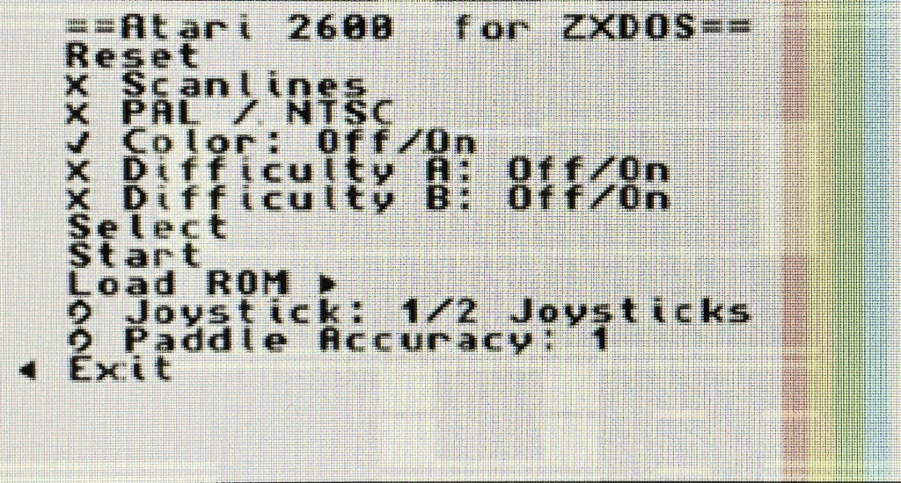
The following options are available:
-
Reset core
-
Scanlines
-
RGB Mode (PAL/NTSC)
-
Color
-
Difficulty A
-
Difficulty B
-
Select
-
Start
-
Load ROM
-
Joystick
-
Paddle Accuracy
-
Exit
ColecoVision
ColecoVision is Coleco Industries' home video-game console that was released in August 1982.
The ZXTRES core is based on ZX-Uno version by Fabio Belavenuto.
Some characteristics of this core are:
-
BIOS ROM is loaded from microSD card.
-
Supports multicart ROM also loaded from microSD.
-
VGA video output.
-
Only Sigma-Delta audio.
microSD card format
To store ROM image (games) and other files, use a microSD card with the first partition in FAT16 or FAT32 format.
They can be downloaded from the original project in GitHub.
After copying the files to the microSD card you must add also the file MULTCART.ROM that can be downloaded from https://t.me/zxtresfpga.
If not already there, install or run the Colecovision core on the ZXTRES.
Keyboard
Special keys and buttons
When the core is active:
-
'Esc': Soft reset (restart the core).
-
0to9: Button 0 to 9 for player 1 and player 2. -
Cursor or
Q,A,E,Ror left controller directions: Directional controls for player 1. -
U,J,O,Por right controller directions: Directional controls for player 2. -
Zor controller buttonA: Main fire button1for player 1. -
Mor controller buttonB: Main fire button1for player 2. -
Xor controller buttonA: Secondary fire button1for player 1 and player 2. -
T: Button '*'. -
Y: Button '#'.
Overview
On startup the BIOS ROM is loaded from the microSD card and then the multicart ROM.

From the multicart menu use the directional controls to choose a ROM and then push button A to load. Pressing 'Esc' restarts the core and reloads the ROM selection menu.
Elan Enterprise
The Enterprise was a home computer developed by the British company Intelligent Software and marketed by Enterprise Computers from 1983.
The ZXTRES version has been developed by Kyp069.
Some characteristics of this core are:
-
Implements 1024 KB of RAM.
-
Support for loading a virtual disk image (.vhd file). At boot time the EP.VHD file is automatically loaded if found in the root directory of the SD card.
-
External joystick is implemented on the DB9 and internal joystick on the cursor keys, with support for two trigger buttons.
-
Only Sigma-Delta audio.
-
RGB video output (using the VGA port).
-
VGA video output.
microSD card format
A microSD card, with the first partition in FAT16 or FAT32 format, should be used to store the ROM file and the virtual disk images you wish to use.
The ROM file should be copied to the root directory of the SD card as ep.rom. Furthermore it is also prepared to work with .VHD (disk image) files, such as the one available with https://www.retrowiki.es/viewtopic.php?f=110&t=200039549 [the ZX-Uno distributions from desubikado],
If not already there, install or run the Elan Enterprise core on the ZXTRES.
Keyboard
Special keys and buttons
When the core is active:
-
F12: Display the core control menu. -
F1: Show the file browser if the current drive is F:. Once in the file browser, you can change partition by pressing the partition letter (F, G, H, etc). -
C+F9: Hard reset the core and reattach the virtual disk drive. -
F9orCtrl+Alt+Del: Soft Reset (resets the Core). -
F11orCtrl+Alt+Backspace: Hard reset (restart the FPGA). Backspace is the delete key located in the top-right portion of the keyboard aboveEnter. -
F12(long press): Toggle between RGB and VGA mode
Overview
When the correct ROM file is present on the microSD card the machine is started.
Press F12 to display the menu with the different core options. Cursor keys or the controller to choose menu options and Enter or the controller button 1 to select and choose menu options.

These are the main ones:
-
Available RAM: Allows you to change the amount of RAM available for the core. -
CPU Speed: To increase or decrease the CPU speed. -
Load ROM: To load a ROM file. -
Mount A:: To mount aDSKdisk image. -
Mount SD: To mount aVHDdisk image (needs a hard reset by pressingC+F9for the system to start using it)
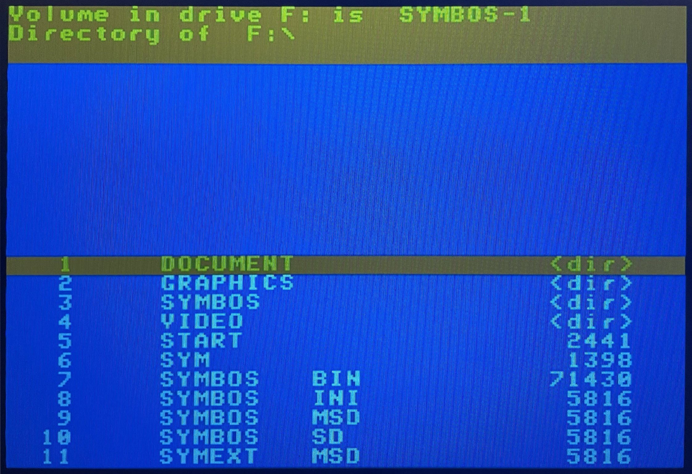
When a VHD disk image is mounted pressing F1 or executing the :FILE command (: is obtained by pressing '), starts a file browser. Pressing another drive letter (G, H, etc) switches to it.
Executable files are COM`.
It is also possible to load programs without using the browser. Here is an example:
:h:
:cd b
cd bricky
:load bricky.comJupiter ACE
The Jupiter ACE was a british micro computer produced by Jupiter Cantab in the early 1980s.
The ZXTRES core has been developed by McLeod, starting from the original version for ZX-Uno, mainly as a documented example of how to port cores to ZXTRES.
Some characteristics of this core are:
-
51K user memory.
-
AY-3-8912 sound chip at ZX Spectrum 128K I/O ports.
-
Colour module as described in Electronics Today UK, expanded with programmable border colour.
-
DisplaPort video output.
-
Readable pattern RAM.
-
RGB PAL video output (using the VGA port).
-
Tape loading using the audio input.
-
VGA video output.
-
Writable ROM memory (to install alternate ROMs).
-
I2S and Sigma-Delta audio.
microSD card format
This core does not use the SD card.
If not already there, install or run the Jupiter ACE core on the ZXTRES.
Keyboard
Special keys and buttons
When the core is active:
-
Home: Scanlines on/off -
End: Select one of the monochrome colour modes. -
Scroll Lock: Switches between RGB (PAL) video mode and VGA (DisplayPort is always active). -
Ctrl+Alt+Delete: Soft Reset (resets the Core) -
Ctrl+Alt+Backspace: Hard reset (restart the FPGA). Backspace is the delete key located in the top-right portion of the keyboard aboveEnter.
Overview
From within Forth, you can load from a external tape or other external audio device with the comand LOAD <nombre>.
|
Jupiter ACE |
Once the tape has finished loading, type the corresponding command to start the program.
|
Instead of BASIC like other systems, Jupiter ACE uses Forth. To see the commands currently available (including those that will start a program loaded from tape, you have to type |

Neo-Geo
Neo-Geo is the name of a 16-bit cartridge-based system for arcade as well as home video game consoles released in 1990 by the Japanese video game company SNK. The Neo-Geo system was created as both a platform for arcade machines (MVS or Multi Video System) and as a home game console (AES or Advanced Entertainment System).
The ZXTRES version (by somhi) is based on the DeMiStified version of the original version for MiSTer FPGA.
Some core characteristics are:
-
Compatible with Sega Mega Drive (Genesis) controllers.
-
MVS and AES support.
-
RGB video output (using the VGA port).
-
Support for ROMS (not encrypted) in
NEOformat. -
Support for Universe BIOS.
-
I2S and Sigma-Delta audio.
microSD card format
To store the ROM image files, use a microSDcard with the first partition in FAT16 or FAT32 format.
After the files have been copied to the microSD card, you need a BIOS (for example Universe BIOS), with the name neogeo.rom, in the root.
If not already there, install or run the Neo-Geo core on the ZXTRES.
Keyboard
Special keys and buttons
When the core is active:
-
F12displays the core control menu. -
Cursor or a controller connected to the left port: Player 1 direction controls.
-
Right Ctrlor controller 1 buttonA: Player 1 buttonA. -
Right Altor controller 1 buttonB: Player 1 buttonB. -
Right Winor controller 1 buttonC: Player 1’s button C. -
Right Shiftor controller 1 buttonD: Player 1’s D button. -
5: Insert coin for player 1 (MVS). -
Start: Start button of player 1. -
W,A,S,Dor a controller connected to the right port: Player 2 Directional Controls. -
Left Ctrlor controller 2 buttonA: Player 2’s A button. -
Left Altor controller 2 buttonB: Player 2’s B button. -
Left Winor controller 2 buttonC: Player 2’s button C. -
Left Shiftor controller 2 buttonD: Player’s D button 2. -
6: Insert coin for player 2 (MVS). -
Caps Lock: Start button of player 2.
Overview
When the correct files are present on the microSD card and the core is started, a blank screen is displayed.
Press F12 to display the menu with the different core options. Cursor keys or the controller to choose menu options and Enter or the controller button 1 to select and choose menu options.

These are the main ones:
-
Load Cart: To load from the microSD card a .neo file. -
Load Cart (skip ADPCM). -
Load BIOS: To load from the microSD card a BIOS file other thanneogeo.rom. -
Load Memory Card. -
Save Memory Card. -
Mount CD: Currently unavailable. -
System Type: MVS or AES -
CD Speed: Currently unavailable. -
CD Region: Currently unavailable. -
CD lid: Currently unavailable. -
Video Mode: NTSC or PAL. -
Scanlines: To add a scanline effect, if desired. -
Blend: To activate, if desired, an image smoothing effect. -
Swap Joystick: To swap the controls of player 1 and player 2. -
Input: Currently unavailable. -
[DIP]: Currently unavailable. -
Exit: Closes the menu.
PC XT
The IBM Personal Computer XT or PC/XT was the second model in IBM’s PC line.
The ZXTRES core has been implemented by @somhi using the PC XT for MiSTer FPGA core by @spark2k06.
Some core characteristics are:
-
8088 CPU with these speed settings: 4.77 MHz, 7.16 MHz, 9.54 MHz cycle accurate, and PC/AT 286 at 3.5MHz equivalent (max. speed).
-
Audio: Adlib, Tandy, Game Blaster, Speaker.
-
CGA graphics 32kB VRAM.
-
Controller support.
-
EMS memory up to 2Mb.
-
Main memory 640Kb + 384Kb UMB memory.
-
MDA monochrome.
-
Mouse support into COM2 serial port, this works like any Microsoft mouse.
-
RGB 15 kHz video output (using the VGA port).
-
Selectable BIOS (Tandy 1000 / PCXT, IBM5160, Yuko ST, pcxt31, Tandy, micro8088, XT-IDE, …).
-
Support for IBM Tandy 1000.
-
Support for IBM PCXT 5160 and clones
-
Tandy graphics with 128Kb of shared VRAM.
-
VGA video output.
-
XT-IDE support.
-
I2S and Sigma-Delta audio.
microSD Card Format
A microSD card, with the first partition in FAT16 or FAT32 format, should be used to store disk image and BIOS files.
For the BIOS files to load automatically, they must be in the root of the SD card with the following names:
-
PCXT.ROMfor the PCXT BIOS. -
TANDY.ROMfor the TANDY 1000 BIOS -
XT-IDE.ROMfor the XT-IDE BIOS (needed to load a system from aVHDimage).
In addition, it is also prepared to work with DOS file system formatted .VHD (disk image) files, such as the one available at the core code repository.
If disk image files with the names PCXT1.VHD (primary IDE) and PCXT2.VHD (secondary IDE) are copied to the card root, they will be loaded automatically at core startup, without having use the configuration menu.
If not already present, install or run the PC XT core on the ZXTRES.
Keyboard
Special keys and buttons
When the core is active:
-
F12: Show or hide the core control menu. -
F12(long press): Toggle between RGB and VGA mode
Overview
Pressing F12 will display the menu with the different Core options. Cursor keys or the controller to choose menu options and Enter or the controller button 1 to select and choose menu options.

These are the main ones:
-
Model: To choose between PC XT and Tandy. -
CPU Speed: CPU speed. 4.77 MHz offers the best compatibility, 3.5 Mhz the best speed. -
Mount IDE 1: To mount a VHD file as primary disk. -
Mount IDE 2: To mount a VHD file as a secondary disk. -
BIOS`: To define the different BIOS types. The XT-IDE BIOS is required to load the OS from VHD disks. -
Audio: To indicate the audio emulation to use (Adlib, SB, etc.) as well as the volume. -
Video: To modify the different video options. -
Exit: Closes the core options menu.
Test DP
The purpose of this core is to test the VGA, RGB and DisplayPort video outputs by applying different effects.
Its main characteristics are:
-
15 kHz RGB video output (using the VGA port).
-
DisplaPort video output.
-
Monochrome green amber white and colour modes.
-
Scanlines.
-
VGA video output.
microSD card format
This core doesn’t use the microSD card.
Keyboard
Special keys and buttons
When the core is active:
-
1: Changes the VGA output to RGB 15 kHz. -
2: Toggles scanlines on or off. -
3: Toggles the display between colour, monochrome, green, amber and white modes.
|
The previously mentioned effects with keys |
Overview
When the core is started, it sends the video signal using both VGA and DisplayPort. The refresh rate is about 64 Hz.
The three LEDs on the ZXTRES board have these meanings:
-
The one closest to the edge should be on all the time. This is the DONE LED and it’s managed by the FPGA itself not the core.
-
The middle one indicates when lit that there’s a valid transmission link between the FPGA and the DisplayPort monitor. This means that the link is good that the training was successful and that it’s currently sending a video image to the monitor. If it’s off it means that the link could not be established (for example because the cable was removed or the monitor is switched off or perhaps because the DisplayPort input is not selected on that monitor).
-
The one on the other end should be blinking at a rate of about one blink per second. This is a "pulse" of the pixel clock indicating that both the VGA and DisplayPort outputs are generating an image. If this LED doesn’t blink no image of any kind can be seen on either VGA or DisplayPort, only RGB at 15 kHz. Under normal circumstances whether a DisplayPort monitor is plugged in or not this LED should be blinking.
ZX81
The ZX81 was a home computer designed by Sinclair Research to be a low-cost introduction to home computing for the general public.
The ZXTRES version was made by avlixa based on Grant Searle’s ZX80 page.
Features:
-
8KB with CHR$128/UDG addon (not tested).
-
16k/32k/48k RAM packs.
-
Chroma 81 (colour support).
-
Controller types: Cursor, Sinclar, ZX81 and ZXpand.
-
Load alternative ROMs.
-
PAL/NTSC timings.
-
Program loading using the audio input.
-
QS CHRS (not tested).
-
RGB video output (using the VGA port).
-
Turbo in Slow mode: NoWait, x2 and x8.
-
Turbo loading of
OandPfiles. -
YM2149 sound chip (ZON X-81 compatible).
-
VGA video output.
-
ZX80/ZX81 selectable (ZX80 currently working only in RGB mode).
-
Only Sigma-Delta audio.
microSD card format
To store ROM and tape files, use a microSDcard with the first partition in FAT16 or FAT32 format.
You can copy a file called ZX8X.ROM (available at the official repository into folder /zx81/roms: it’s a concatenation of ZX81 rom (8k) + ZX80 rom (4k).
See the corresponding section for instructions on how to install the ZX81 core in ZXTRES.
Keyboard
The PS/2 keyboard isn’t mapped and the original machine keys layout is kept. For example to obtain a " you must type Shift+P or Shift+0 to delete.
ZX80
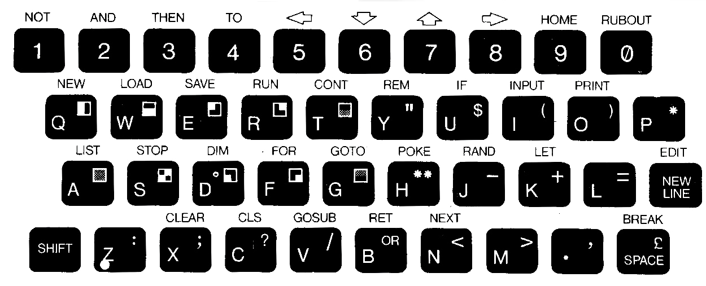
ZX81
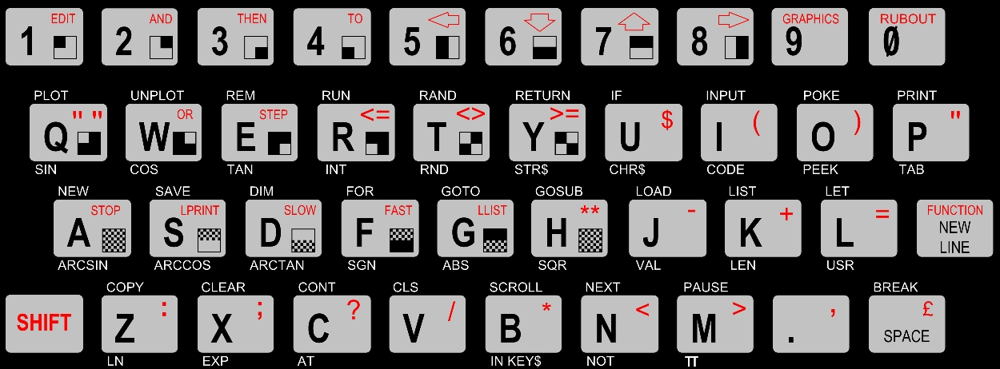
Special keys and buttons
When the core is active:
-
F1: Enable or switch off the alternative chararacters. -
F5or controller buttonB: Show or hide configuration menu. -
F9: Enable or switch off the MIC audio output (some games make annoying sounds when enabled). -
F10: Enable or switch off playing the audio input through the audio output to hear loading sounds while loading. -
Scroll Lock: Switch between RGB and VGA video output. -
Ctrl+Alt+Supr: Soft reset (restart the core). -
Ctrl+Alt+Backspace`: Hard reset (restart the FPGA). Backspace is the delete key located in the top-right portion of the keyboard above
Enter.
Overview
Press F5 or controller button A to show or hide the configuration menu. Use the cursor keys and Enter to select menu options.

The available options are:
-
Reset.
-
Load Tape.
-
Load ROM.
-
Configuration Options.
-
Exit.
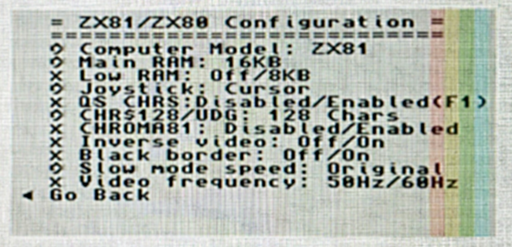
-
Computer Model: ZX80, ZX81.
-
Main RAM: 16K, 32K.
-
Low RAM: Off, 8KB.
-
Joystick: Cursor, Sinclair, ZX81.
-
QS CHRS: Enabled, Disabled.
-
CHR$128/UDG: 128 chars, 64 chars, Disabled.
-
Chroma81: Enabled, Disabled.
-
Inverse Video: Off, On.
-
Black Border: Off, On.
-
Slow mode speed: Original, No Wait, x2.
-
Video frequency: 50 Hz, 60 Hz.
You can load a tape file selecting it from the menu then enter the command LOAD"" and Enter.
|
Some monitors stop playing audio if the video signal is lost. You should connect headphones or a external speaker if you want to hear the sound while loading a tape. |
P files with colourization and char are supported.
For colourization to work CHROMA81 should be enabled before loading. For alternate chars QS CHRS should be enabled before loading.
|
The recommended options for most games are: Main RAM: 16KB. Low RAM: 8KB. CHR$128: 128 chars. QS CHRS: Enabled. CHROMA81: Enabled. |
ZX Spectrum +3 (zxp3)
The https://es.wikipedia.org/wiki/ZX_Spectrum_128_%2B3 [ZX Spectrum +3] was manufactured by Amstrad and released in 1987. It was similar in appearance to the +2 but featured a 3-inch floppy disk drive from the tape drive, and had a black casing. It was the only Spectrum capable of running the CP/M operating system without additional hardware.
The ZXTRES version has been made by kyp069.
Features:
-
50 Hz VGA video output
-
Turbosound
-
Tape loading
-
Two floppy drives
-
ZXMMC disk image support
-
Kempston joystick with two trigger buttons
-
Joysticks Interface 2
-
RGB PAL video output (using the VGA port)
-
Supports any +3 compatible ROM, such as Amstrad standard ROM and Garry Lancaster’s +3e ROM
microSD Card Format
A microSD card, with the first partition in FAT16 or FAT32 format, should be used to store the disk image or ROM files to be loaded.
The default ROM file should be copied to the root directory of the SD card as zxp3.rom. In addition, it is also prepared to work with a VHD (disk image) file formatted internally in the +3DOS file system, such as the one available with https://www.retrowiki.es/viewtopic.php?f=110&t=200039549 [the ZX-Uno distributions from desubikado],
If not already there, install or run the zxp3 core on the ZXTRES.
Keyboard
The keyboard is not mapped to the standard PS/2 layout, and keeps the layout of the original machine. So, for example, to get " you have to press Shift+P or to delete, Shift+0.
Special keys and buttons
During core execution:
-
F12to show or hide the menu. -
Scroll Lockor presssing and holdingF12for one second: switch between RGB and VGA video mode. -
Ctrl+Alt+Del` or
F9: Soft Reset (resets the Core) -
Ctrl+Alt+Backspace` or
F8: Hard reset (restart the FPGA). Backspace is the delete key located in the top-right portion of the keyboard aboveEnter.
Overview
Press F12 to display the menu with the different core options. Cursor keys and Enter to select and choose menu options.

-
Load ROM: To load or change the loaded ROM -
Mount drive A:: To mount a DSK file to the first drive -
Mount drive B:: To mount a DSK file to the second drive -
Mount SD:: To mount a VHD file as main drive (needs a hard reset by pressingC+F9for the system to start using it) -
Reset FPGA: To reset the FPGA
Controller 1 behaves simultaneously with Kempston protocol (with two trigger buttons) and Sinclair (1,2,3,4,5) with second trigger button (z). The controller connected to port 2 behaves with Sinclair protocol (6,7,8,9,0) and second trigger button (x).
ZX Spectrum Next
ZX Spectrum Next is an FPGA based project, which would like to be to be the evolution of the Sinclair ZX Spectrum line of computers. It brings new features while keeping hardware and software compatibility with previous ZX Spectrum computers.
Specially thanks to avlixa, there exists a ZX Spectrum Next core synthesized for ZXTRES.
The core, for the moment does not have any of these features:
-
Internal beeper
-
EDGE expansion Connector
-
RTC module
-
Membrane keyboard
-
Flashing additional cores or upgrading the Next core from within the Next core
-
MIC out
-
HDMI Video
-
UART communication using the joystick port
-
Raspberry Pi support
It also has these other features, which do not exist in the original core:
-
Different colour modes including monochrome
-
Only Sigma-Delta audio
The user manual is available to download at the official web page.
microSD card format
You have to use a microSD card with the first partition formatted as FAT16 or FAT32, and inside, the standard esxDOS distribution, matching ZXTRES BIOS version (see esxdos corresponding section for more info).
Download NextZXOS distribution from the official page.
Extract NextZXOS in the root of the microSD card.
If not already there, install or run the ZX Spectrum Next core on the ZXTRES.
Keyboard
Special keys and buttons
While the core is running:
-
F4(Caps Shift+Symbol Shift+4on gomaDOS+): Soft Reset -
F7(Caps Shift+Symbol Shift+7on gomaDOS+): Select one of the monochrome color modes -
F9(Caps Shift+Symbol Shift+9on gomaDOS+): NMI -
Ctrl+Alt+Backspace`: Hard reset (restart the FPGA). Backspace is the delete key located in the top-right portion of the keyboard above
Enter.
Overview
On first boot, some help screens will show up. After pressing Space key, NextZXOS Startup Menu appears.

You can navigate the menu with the cursor keys, 5, 6, 7 and 8 keys, or a joystick (if configured as Kempston, MD or cursor). Enter or the joystick button chooses one element.
|
During the core startup, you can force select the analogue video output use by pressing |
More… shows a second menu with more options.

If you choose Browser, NextZXOS Browser will start, and then you can see the contents of the microSD card and load a file (TAP, NEX, DSK, SNA, SNX, Z80, Z8, etc.).

|
It is not possible to load TRD files directly from the Browser (NextZXOS must be configured to load a "personality" with esxdos). |
For more information, see the official user manual.
Other hardware
Middle Board
An intermediate board can be installed in a ZXTRES as an optional component that expands the hardware capabilities to include support for:
-
MIDI (via RP2040 microcontroller),
-
direct loading of cores from microSD card (via microcontroller RP2040)
-
USB keyboards and controllers (via RP2040 microcontroller)


Recovery via USB
In some situations it may be necessary to reinstall the bootstrap firmware for some https://www.raspberrypi.com/documentation/microcontrollers/raspberry-pi-pico.html%23rp2040-device [RP2040 microcontroller] on the board.
Hardware required:
-
Computer with USB and compatible with Raspberry Pi Pico.
-
Cable with one USB-A end (to connect to the ZXTRES) and the other end suitable for connecting to the computer (USB-C, USB-A, etc.)
Software required:
-
Obtain the appropriate UF2 file for the microcontroller to be recovered:
-
rp2s.uf2for boards with a single microcontroller. -
rp2m-bootstrap.uf2for rp2040 MIDI (boards with two microcontrollers) -
rp2u-bootstrap.uf2for rp2040 USB (boards with two microcontrollers)
-
Steps to follow:
-
Turn off the ZXTRES if it is on, and connect with the USB cable to the computer.
-
In the case of boards with two microcontrollers, set the switch to the appropriate position for the rp2040 to be recovered, being position 1 for USB and position 2 for MIDI.
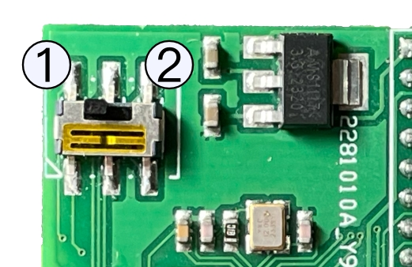
-
Turn on the ZXTRES while pressing the BOOTSEL button on the bottom of the case.
-
Copy the corresponding UF2 file to the drive that will be available on the computer.
-
Finally, in the case of boards with two microcontrollers, if necessary, return the switch to position 1 (USB).
Loading from tape
Some cores can load from an external device such as a cassette tape player, just like the original machines.
Besides the microSD card you must connect an appropriate audio cable into the ZXTRES audio input. It must have a 3.5mm stero jack on one side and two mono outputs on the other side (one for each audio channel). The right audio is connected to the audio player (this is not necessary with a miniduino because it already uses only the right audio channel when playing).
Cassette tape player
This works exactly the same way as when using it with the original computers:
-
Connect the audio cable.
-
Type on the computer or select the tape loading option. For examle, for ZX Spectrum 48K press
J(LOAD),""andEnterto start loading. -
Start playing the tape (you may need to try several times, adjusting the player volume).
Computer
Depending on the operating system (Windows, macOS or Linux) there are several programs that can either play a tape file (TAP TZX PZX and so on) and output the sound through a headphone output or create an audio file (WAV VOC AU and so on) that can be played using a music or audio program.
PlayTZX
This program for Windows, macOS and Linux can directly play a TZX tape file through the computer’s audio output.
You can download the application for Windows from World of Spectrum Classic and for Mac from this GitHub repository or compile the source code as explained later.
-
Connect the audio cable between the computer audio output and ZXTRES audio input (remember to use only the right mono channel to the PC Mac and so on output).
-
Type on the computer or select the tape loading option. For examle for ZX Spectrum 48K typing
Jthen twice"and thenEnterto do the classicLOAD "" + Enter. -
Start playing a tape file with this command (you may need to try several times adjusting the player volume).
./playtzx <tape file path>If everything worked correctly, you’ll see at the shell the name of the different tape data blocks while the sound is played and the ZXTRES core loads the program.
|
On Linux the program uses as output the device |
Compile source code (macOS and Linux)
Beofre compiling, ensure that the developer tools are installed on the system including a C compiler (gcc clang command line developer tools for Mac and so on) and GNU Autotools.
Download the source code from this repository), extract the contents if required, in the terminal navigate to the folder and enter:
aclocal && autoconf && autoheader && automake --add-missing
./configure
makeIf everything worked correctly, a new file called playtzx is created that you can copy anywhere and then use. You can remove the compilation folder.
Mobile phone tablet MP3 player and so on
There are only a few apps (or none) that can directly play a tape file on a mobile device so in many cases the only option is to convert it to an audio file before playing it.
PlayZX is an app for Android that can play tape files through the headphone output.
|
The latest devices with headphone output are typically designed to work with impedances of only a few ohmis. This may sometimes not be enouth for the ZXTRES audio input. In these cases you should (if possible) to switch off headphone volume limitations or use a headphone amplifier that can give a higher impedance. |
Audio file conversion
These are some programas that exist which can export tape files to audio files.
Tapir is a GUI program for Windows (but that can also run with Wine on Linux or versions of macOS with 32-bit Intel support) that can load TZX and TAP files and export to WAV audio
tape2wav from Fuse Utilities is a command line utility that can export from TZX PZX and TAP to WAV.
pzx2wav in PZX Tools is another command line utility that exports to WAV.
Miniduino
Miniduino is a tape file audio player, based on a STM32F103C8T6 microcontroller or ATMega38P, and Maxduino firmware preinstalled.
Maxduino plays, in a very similar way to how cassette tape players worked, digital tape files in format as like TAP and TZX (ZX Spectrum), O (ZX80), P (ZX81), CDT (Amstrad CPC), CAS(MSX) TSX (MSX, Acorn, etc). It is also possible to play AY music files as if they were tapes, in order to load the from SpecAY in a ZX Spectrum.
Ports and buttons

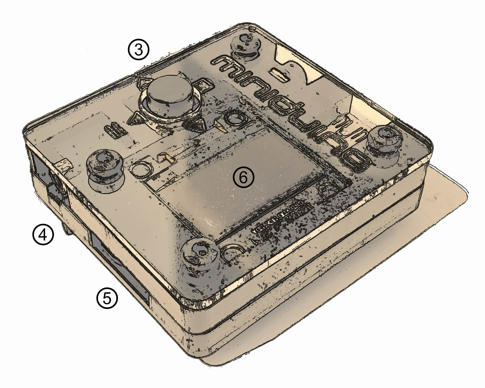
1 |
Power |
2 |
Audio output |
3 |
Control button |
4 |
Motor control |
5 |
SD card slot |
6 |
Screen |
Configuration
A SD is needed in order to store the tape files to play. Fast cards (Class 10 or greater) aren’t recommended because there can be problems while reading the data. High capacity (SDXC or greater) cards aren’t recommended too.
The card must have the first partition formatted as FAT16 or FAT32.
Besides the card, you have to plug an appropriate audio cable to audio input. It must have a 3.5 mm stereo jack on one side, and two mono output on the other side (one for each audio channel). The right audio mono is connected to the Miniduino.
If you have a device that can use motor control, you can also use a cable with a 2.6 mm jack.
Copy the tape files (TAP, TZX, O, P, CAS, TSX, etc) to the first partition of the SD card. They can be organized using folders or directories.
Use
Once the SD card with the data files is inserted, it’s turned on plugging in the included USB power cable.

Pressing down the control button shows the options menu which can set the following:
-
Baud Rate: Configures turbo speed baud rates when playing 4B blocks in MSX files (
CASandTSX) -
Motor Ctrl: Enable this option when a control cable is connected to a proper device (Amstrad, CPC, MSX, etc.)
-
Converter (TSXCzxpUEFWS): Enables turbo loading
.CASand.TSXfiles, changes signal for Spectrum and Amstrad CPC files and/or change parity when playing Acorn Electron and BBC Micro.UEFfiles -
(Skip BLK)): To disable (Skip ON) or enable automatic pause when 2A blocks are found
When not inside the options menu, the control button is used as a four directional control joystick, which has two different behaviours depending whether the player is stopped or paused.
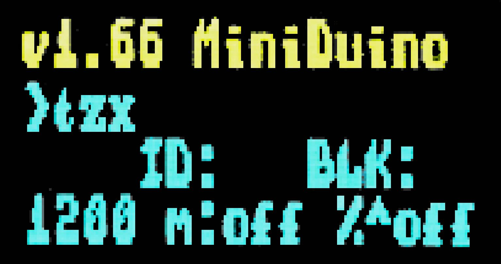
When the player is stopped (file and directories browser):
-
Up and Down move through the current files and directories list
-
Left (Stop) goes one level up in the directory tree
-
Right (Play/Pause) enters into a directory or, if the selection is a file, tries to play it
Once a file is being played, stop playing it with the left button (Stop) or pause using the right button (Play/Pause).

When in pause (tape block browser:
-
Up and Down mov through the tape block files already played (useful for multiload titles, to load a previous level block, for example)
-
Left (Stop) cancels the player and goes back to file and directory browser mode
-
Right (Play/Pause) continues playing from the selected block
-
Press down the control button to enable or disable turbo mode for MSX
Making TZX or TSX files from other formats
While there are same tape file formats (Commodore, Camputers Lynx, etc.) not supported by Maxduino, there are some programs that can, more or less successfully, embed audio data in a TSX or TZX file, which then can be used with Miniduino.
MakeTSX
You can use the following command with NataliaPC’s MakeTSX to create a TSX file with embedded audio:
...MakeTSX -b15 -wav audio_file.wav -tsx new_file.tsxRetroConverter
Jorge Fuertes RetroConverter can create a TZX file with a command like this:
...retroconv audio_file.wav new_file.tzxMaxduino firmware upgrade
Maxduino firmware is periodically updated and improved. You can track the changes and improvements either at the Va de Retro forums or at the GitHub project page. To take advantage of this improvements, the Miniduino flash image must be flashed with the updated firmware version.
There are two Miniduino models, one based on STM32 microcontroller, and another one based on ATMega328P.
STM32 Model
Firmware flashing is done from a computer (Windows, Mac, Linux) with Arduino IDE installed.
You have to install SDFat (1.1.4) software library selecting the menu option Program → include library → manage libraries
Minidiuno microcontroller support must also be added. This is done in two steps:
First, adding ARM Cortex M3 support from menu Tools → board → board manager, and installing "Arduino SAM boards (Cortex-M3)"
Then, you have to add STM32 microcontroller support, downloading the file available at this link.
Extract the contents to the current user directory in
...Arduino/hardware/Arduino_STM32If on Windows, install the USB device controller, running (with elevated privileges:
...\drivers\win\install_drivers.batOn Linux, install with root privileges the necessary udev rules:
...tools/linux/install.shOn MacOS, if Miniduino does not appear as USB device in Arduino ID when plugged, it may be necessary to install libusb.
Finally, when on Mac or Linux, the file maple_upload inside Arduino_STM32 has to be changed with a text editor. Those lines do not work:
if [ $# -eq 5 ]; then
dfuse_addr="--dfuse-address $5"
else
dfuse_addr=""
fiAnd they have to be changed into this:
dfuse_addr=""Once you have the environment ready, download the software from the official repository in GitHub
|
Miniduino player with STM32 microcontroller is only supported from 1.65 and up |
Load the project file with Arduino IDE (for example MaxDuino_v1.69.ino).
Check in the file userSTM32Config.h that all logo entries are commented except for Miniduino and, if not, change them.
...
//#define tanque4
//#define tanque1
//#define dostanques
//#define cablemax
//#define sony
#define miniduino
...Connect the Miniduino device to the computer using the USB cable, and find the assigned port, normally with a name like "Maple Mini" (for example: COM5 Maple Mini)
Set the following options in the "Tools" menu:
Board: Generic STM32F103C Series
Variant: STM32F103C8 (20k RAM, 64k Flash)
Upload Method: STM32duino bootloader
CPU Speed: 72Mhz (Normal)
Optimize: Smallest (default)
Port: <Previously identified port>Finally, click on the firmware load button and wait for a few seconds while the project is compiled and loaded into the device.
If everything has been done correctly the Miniduino will restart and show on the screen the new firmware version.
ATMega328P Model
Requirements:
-
One hex key with the right socket size for the cover screws
-
USBasp flash programmer

Also, firmware flashing is done from a computer (Windows, Mac, Linux) with Arduino IDE installed.
You have to install SDFat (1.1.4) software library selecting the menu option Program → include library → manage libraries.
Once you have the environment ready, download the software from the official repository in GitHub
Load the project file with Arduino IDE (for example MaxDuino_v1.69.ino).
Check in the file userconfig.h that all logo entries are commented except for Miniduino and, if not, change them.
...
//#define tanque4
//#define tanque1
//#define dostanques
//#define cablemax
//#define sony
#define miniduino
...Connect the Miniduino device to the USBasp programmer, making sure that the connector is in the right position (i.e VCC with VCC, MOSI with MOSI, GND witch GND, etc.), and connect the USB adapter to the computer

Set the following options in the "Tools" menu:
Board: Arduino Pro or Pro Mini
Processor: ATmega328P (5V,16 Mhz)
Programmer: "USBasp"Finally, keep pressed the computer keyboard Shift key while clicking on the firmware load button and wait for a few seconds until the project is compiled and loaded into the device.
If everything has been done correctly the Miniduino will restart and show on the screen the new firmware version.
Troubleshooting
Firmware image management
There are several tools that you can use to create or edit the contents of ZX1 and ZX3 files.
zx123_tool
This tool enables you to analyse, extract and inject data in SPI flash image files for ZX-Uno, ZXDOS, ZXTRES and similar devices.
It requires Python 3. Depending on the operating system you may need to install it.
With Python 3 installed, you only need to download the latest version of the tool from the official repository following this link.
After you’ve extracted the tool, you can run it from the command line. The command varies depending on the operating system.
Typically, on Windows it’s:
py -3 zx123_tool.pyOtherwise, it’s typically:
python3 ./zx123_tool.pyYou also need an SPI flash image file. This can be obtained from within the ZX Spectrum core with one of the commands back16m backzx2 or backzxd. After you’ve obtained the exteacted file from the microSD card you can "clean" it leaving only the ZX Spectrum core and the first Spectrum ROM:
... zx123_tool.py -i FLASH.ZXD -w -o FLASHempty.ZXDWhere FLASH.ZXD is the path to the original file and FLASHempty.ZXD is the path to the new "clean" file.
List the contents of an image
To view the contents of an image file called FLASH.ZXD (installed cores and some configuration information):
... zx123_tool.py -i FLASH.ZXD -lTo show the contents of the same file including ZX Spectrun ROMs information:
... zx123_tool.py -i FLASH.ZXD -l -rChange the BIOS of an image
To change the BIOS inside a file called FLASH.ZXD using the BIOS file called FIRMWARE.ZXD:
...zx123_tool.py -i FLASH.ZXD -a BIOS,FIRMWARE.ZXDYou can modify some parameters. For example with the options; -m for video mode: 0 (PAL), 1 (NTSC), or 2 (VGA), -k for the keyboard layout: 0 (Auto), 1 (ES), 2 (EN) or 3 (Spectrum).
To change the BIOS of a file called FLASH.ZXD using the BIOS file FIRMWARE.ZXD and also set the video mode to VGA:
...zx123_tool.py -i FLASH.ZXD -a BIOS,FIRMWARE.ZXD -m 2 -k 3There are also options to set the BIOS boot delay time, the default core and the default Spectrum ROM. For more information, refer to the documentation.
Add a Spectrum ROM to an image
To add a Spectrum ROM file called 48.ROM with the name Spec48 and using the slot number five:
...zx123_tool.py -i FLASH.ZXD -a ROM,5,xdnlh17,Spec48,48.romRefer to the documentation for all possible options when adding a Spectrum ROM.
Among the information you provide when adding a ROM there are some flags. These configure the hardware options used when loading the ROM:
|
Keyboard issue 3 enabled (instead of issue 2). |
|
Switch off memory contention. |
|
Enable divMMC. |
|
Enable NMI divMMC (esxDOS NMI browser). |
|
Use Pentagon timings. |
|
Use 128K timings. |
|
Switch off divMMC and ZXMMC ports. |
|
Enable Timex Horizontal MMU. |
|
Switch off ROM high bit (1FFD bit 2). |
|
Switch off ROM low bit (7FFD bit 4). |
|
Switch off 1FFD port (+2A/3 paging). |
|
Switch off 7FFD port (128K paging). |
|
Switch off TurboSound (secondary AY chip). |
|
Switch off AY chip. |
|
Switch off Radastanian mode. |
|
Switch off Timex mode. |
|
Switch off ULAplus. |
Install a core to an image
To install a core in slot three from a file called SPECNEXT.ZXD with the name SpecNext:
...zx123_tool.py -i FLASH.ZXD -a 'CORE,3,SpecNext,SPECNEXT.ZXD'To also set the core as the default:
...zx123_tool.py -i FLASH.ZXD -a 'CORE,3,SpecNext,SPECNEXT.ZXD' -c 3Change esxDOS ROM from an image
As with the BIOS firmware you can install an esxDOS ROM file:
...zx123_tool.py -i FLASH.ZXD -a esxdos,ESXMMC.BINCombine several actions in one line
You can combine several actions in one command line. For example to "clean" an image file called FLASH.ZXD creating a new one called FLASHnew.ZXD installing the BIOS from the file FIRMWARE.ZXD set up video mode to VGA the keyboard in Spectrum mode add a Spectrum ROM file called 48.rom with the name Spec48 while using slot five install a core at slot three from a file called SPECNEXT.ZXD with the name SpecNext as default core:
... zx123_tool.py -i FLASH.ZXD -w -o FLASHnew.ZXD -a BIOS,FIRMWARE.ZXD -m 2 -k 3 -a ROM,5,xdnlh17,Spec48,48.rom -a CORE,3,SpecNext,SPECNEXT.ZXD -c 3Firmware recovery
Sometimes it may happen that the ZXTRES stops booting, for example when installing an experimental core or when upgrading the ZX Spectrum Core or the BIOS. The ZXTRES board LEDs are on but there’s no display and it doesn’t do anything when trying the different key combinations to access BIOS setup and so on.
When this happens there are several recovery methods to enable you to restore the firmware.
JTAG cable connections
You can use these images as a reference in some recovery steps when using jump wires or USB-Blaster connections to the ZXTRES board.

|
NEVER connect the 3V line (VCC). |
Recovery using a Linux or macOS
Hardware required:
-
Linux or macOS operating system in a physical or virtual machine with USB and access to internet (only to download the software).
-
A USB-Blaster cable.
-
A microSD card with the first partition formatted as FAT16 or FAT32 for the ZXTRES.
-
Keyboard and display for the ZXTRES.
Software required:
-
Flash image and recovery file for ZXTRES from the main Github repository. Note, there are different files for each device:
-
recovery_a35.zipfor ZXTRES -
recovery_a100.zipfor ZXTRES+ -
recovery_a200.zipfor ZXTRES++
-
-
For Linux, a special udev rules file is also needed. Available here to download.
Instruction steps:
-
Install Open On-Chip Debugger (OpenOCD) or openFPGALoader to the system using a package manager.
For example, to install OpenOCD on Arch Linux:
pacman -S openocdFor openFPGALoader on Arch Linux:
pacman -S openfpgaloaderFor OpenOCD on Debian Linux:
apt-get install openocdFor OpenOCD on macOS (using Homebrew):
brew install open-ocdFor openFPGALoader on macOS (using Homebrew):
brew install openfpgaloader-
Only for Linux, also add permissions to the current user to have access to the JTAG programmer. Use this commands to copy the previously downloaded file and activate the rules:
groupadd plugdev
sudo cp 99-openfpgaloader.rules /etc/udev/rules.d/
sudo udevadm control --reload-rules && sudo udevadm trigger
usermod -a $USER -G plugdev-
Connect the USB-Blaster, to the computer, and the other end to the ZXTRES as explained before. If already connected, disconnect and conect to use the new udev rules.
-
Copy the file called
recovery.bitpreviously downloaded from the main Github repository to the Raspberry Pi. In this example it’s at `/home -
Power on the ZXTRES.
-
Ensure that you’re in the folder where
recovery.bitis located and run the command that loads the BIOS on recovery mode.
For Linux using OpenOCD:
cd /home/zxtres/unbrick
sudo openocd -f /usr/share/openocd/scripts/interface/altera-usb-blaster.cfg -f /usr/share/openocd/scripts/cpld/xilinx-xc7.cfg -c "init; pld load 0 recovery.bit;"For macOS using OpenOCD:
cd /Users/zxtres/unbrick
openocd -f /opt/homebrew/share/openocd/scripts/interface/altera-usb-blaster.cfg -f /opt/homebrew/share/openocd/scripts/cpld/xilinx-xc7.cfg -c "init; pld load 0 recovery.bit;"For Linux or macOS using OpenFPGALoader:
cd /Users/zxtres/unbrick
openFPGALoader -c usb-blaster recovery.bit|
Remember to enter the correct name replacing |
-
If everything worked correctly, you’ll see that the FPGA LED change their state and the BIOS is shown on the display.
If there’s no image on the display and you’re not using DisplaPort, press Scroll Lock to switch between RGB and VGA modes in case the recovery BIOS started in the wrong mode for your setup.

-
Insert the microSD card formatted as FAT16 o FAT32 and with the
FLASH.ZX3file downloaded previously in the ZXTRES. -
Disconnect the USB-Blaster.
-
Select the
Upgrade Flash from SDopiton. PressEnter, chooseYesand pressEnteragain to start the flash writing process.

|
This process can’t be undone and replaces all previously installed cores, the BIOS, the ZX Spectrum ROMs and their configuration with the data in the image file. |
|
Remember that it is also possible to navigate through the BIOS options using a controller connected to the right port. |
-
After some minutes the process ends and on power cycling the ZXTRES it should start.
|
If no image is shown and you’re not using DisplaPort, press |
Recovery using a Raspberry Pi
Hardware required:
-
Raspberry Pi (with microSD card, keyboard, display, power supply and so on) and with internet connection.
-
Five jump wires (if possible female on both sides) or instead a USB-Blaster cable.
-
A hex key (Allen key) for the ZXTRES cover screws.
-
A microSD card with the first partition formatted as FAT16 or FAT32 for the ZXTRES.
-
Keyboard and display for the ZXTRES.
Software required:
Flash image and recovery file for ZXTRES from the main Github repository. Note, there are different files for each device:
-
recovery_a35.zipfor ZXTRES -
recovery_a100.zipfor ZXTRES+ -
recovery_a200.zipfor ZXTRES++-
For Linux, a special udev rules file is also needed. Available here to download.
-
Instruction steps:
-
Install Raspberry Pi OS (formerly known as Raspbian) to the Raspberry Pi microSD card (using the official download NOOBS PINN and so on).
-
Install Open OCD:
sudo apt-get update
sudo apt-get install git autoconf libtool make pkg-config
sudo apt-get install libusb-1.0-0 libusb-1.0-0-dev telnet
sudo apt-get install libusb-dev libftdi-dev
git clone git://git.code.sf.net/p/openocd/code openocd-code
cd openocd-code/
./bootstrap
./configure --enable-usb_blaster --enable-sysfsgpio --enable-bcm2835gpio
make
sudo make install
cd ..
rm -rf ./openocd-code-
Add permissions to the current user to have access to the JTAG programmer. Use this commands to copy the previously downloaded file and activate the rules:
groupadd plugdev
sudo cp 99-openfpgaloader.rules /etc/udev/rules.d/
sudo udevadm control --reload-rules && sudo udevadm trigger
usermod -a $USER -G plugdev-
Connect the USB-Blaster or jump wires if using GPIO. In this case as explained before connect the FPGA JTAG lines (
TMSTDITDOTCKandGND) using the wires to the Raspberry Pi GPIO pins.
If using a GPIO connection, take note of the chosen pins and ensure that GND is connected with GND.

In this example the 31 33 35 37 and 39 pins are used (corresponding to GPIO #6 GPIO #13 GPIO #19 GPIO #26 and GND):
| ZXTRES JTAG | GPIO | Raspberry Pi Pin |
|---|---|---|
|
GPIO#6 |
|
|
GPIO#13 |
|
|
GPIO#19 |
|
|
GPIO#26 |
|
|
GND |
|
-
Copy the file called
recovery.bitpreviously downloaded from the main Github repository to the Raspberry Pi. In this example it’s at/home/pi/zxtres/unbrick/ -
If using GPIO, make a copy of the Open OCD configuration file to the folder where
recovery.bitis located.
cp /usr/local/share/openocd/scripts/interface/raspberrypi2-native.cfg /home/pi/zxtres/unbrick/-
For GPIO connection edit a copy of
raspberrypi2-native.cfg, updatingbcm2835gpio_jtag_nums(uncommenting if necessary) with your JTAG and GPIO connection numbers at the linebcm2835gpio_jtag_nums:
# Header pin numbers: 37 31 33 35
bcm2835gpio_jtag_nums 26 6 13 19-
Ensure the line
bcm2835gpio_swd_numsis commented out (not necessary for USB-Blaster):
#bcm2835gpio_swd_nums 11 25-
Add
adapter speed 250to the end of the file the line (not necessary for USB-Blaster):
adapter speed 250-
Power on the ZXTRES.
-
Ensure that on the Raspberry Pi you’re in the folder where
recovery.bitis located and run the command that loads the BIOS on recovery mode using the path to the previously editedraspberrypi2-native.cfg.
For GPIO connection:
cd /home/pi/zxtres/unbrick
sudo openocd -f /home/pi/zxtres/unbrick/raspberrypi2-native.cfg -f /home/pi/zxtres/unbrick/xilinx-xc7.cfg -c "init; pld load 0 recovery.bit; shutdown"For USB-Blaster connection:
cd /home/pi/zxtres/unbrick
sudo openocd -f /usr/local/share/openocd/scripts/interface/altera-usb-blaster.cfg -f /home/pi/zxtres/unbrick/xilinx-xc7.cfg -c "init; pld load 0 recovery.bit; shutdown"|
Remember to enter the correct name replacing |
-
If everything worked correctly, you’ll see that the FPGA LED change their state and the BIOS is shown on the display.
If there’s no image on the display and you’re not using DisplaPort, press Scroll Lock to switch between RGB and VGA modes in case the recovery BIOS started in the wrong mode for your setup.
-
Insert the microSD card formatted as FAT16 o FAT32 and with the
FLASH.ZX3file downloaded previously in the ZXTRES. -
If using a USB-Blaster connection, disconnect the connector.
-
Select the
Upgrade Flash from SDopiton. PressEnter, chooseYesand pressEnteragain to start the flash writing process.
|
This process can’t be undone and replaces all previously installed cores, the BIOS, the ZX Spectrum ROMs and their configuration with the data in the image file. |
|
Remember that it is also possible to navigate through the BIOS options using a controller connected to the right port. |
-
After some minutes the process ends and on power cycling the ZXTRES it should start.
|
If no image is shown and you’re not using DisplaPort, press |
References
Spectrum
Scan Codes
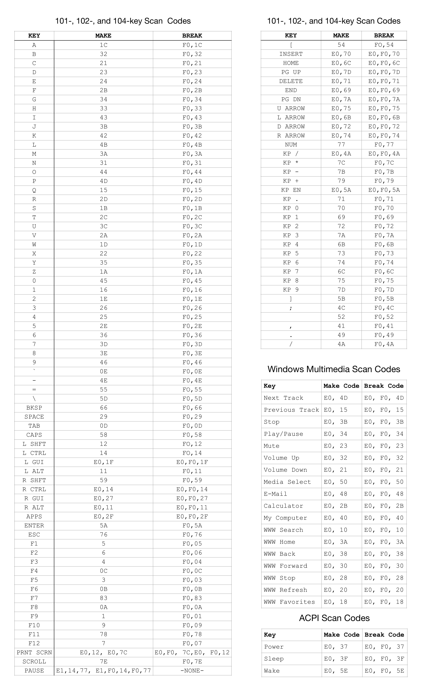
ZXTRES control I/O registers
In the Spectrum core the $FC3B and $FD3B ports are reserved and assigned by the ZXI committee. A total of 256 different I/O registers unique to the ZX-Uno family are accessed through these ports.
Port $FC3B (64571) stores the address ($00 - $FF) of the I/O register to be accessed. It can be read to find out which register address was last allocated.
Port $FD3B (64827) is the access port to the register selected with the previous port. Its meaning (read/write) depends on the implementation of each register.
For example, to allocate bank 16 of the SRAM to the address space $C000 - $FFFFFF during boot mode, using the MASTERMAPPER register, would be as follows:
ld bc,$fc3b ;Port to set register number to use
ld a,1 ;Register $01 (MASTERMAPPER)
out (c),a ;Selected. From now on, any access to $FD3B is using MASTERMAPPER
inc b ;Register access port ($FD3B, just increment B)
ld a,16 ;SRAM Bank 16
out (c),a ;Write to the MASTERMAPPER registerThe registers implemented in the ZX-Uno family are described below.
$00 MASTERCONF
| Direction | Value after user reset | Value after master reset | Value after poweron |
|---|---|---|---|
Read/Write |
Does not change |
|
|
Binary format (fields in bold can only be altered when LOCK=0):
LOCK |
MODE1 |
DISCONT |
MODE0 |
I2KB |
DISNMI |
DIVEN |
BOOTM |
-
BOOTM: 1 indicates that the ZX-Uno is in boot mode (configuration mode). Boot mode only makes sense while the boot firmware is running, where some aspects of the ZX-Uno are allowed to be configured before going into run mode. MASTERCONF can always be read, both in boot mode and in run mode. It is set to 0 manually per program, at which point ZX-Uno enters run mode. -
DIVEN: set to 0 indicates that DIVMMC is not enabled in the system, although the SPI interface access ports of the SD/MMC slot are still available. The memory used by DIVMMC remains available for other uses. 1 indicates that DIVMMC is enabled. If enabled, an ESXDOS image must be loaded into the corresponding RAM bank before entering run mode. The default value of this bit is 0. -
DISNMI: set to 1 indicates that the DIVMMC NMI function will not be available. NMI will work, but will not cause ESXDOS to automate, thus leaving NMI control to the main system ROM. Bit added to improve DIVMMC compatibility with SE Basic IV. Defaults to 0 (ESXDOS handles NMI events). -
I2KB`: a1 sets the ULA to return a value consistent with a Spectrum issue 2 when reading the keyboard port ($FE). When 0, the returned value is compatible with issue 3 and later. It defaults to 0. -
MODE1,MODE0: specifies the ULA timing mode to accommodate different Spectrum models. 00 = ULA ZX Spectrum 48K PAL, 01 = ZX Spectrum 128K/+2 grey, 10 = Pentagon 128, 11 = 48K NTSC (262 scans). -
DISCONT: indicates whether memory contention should occur in the video memory. 0 to enable contention (48K and 128K compatibility). 1 to disable contention (Pentagon 128 compatibility). -
LOCK: When set to 1, it prevents further changes to certain bits in the MASTERCONF register, and also prevents access to the SPI Flash. This bit is reset to 0 only by a master reset (Ctrl-Alt-BkSpace) or by powering the clone off and on.
$01 MASTERMAPPER
| Direction | Value after user reset | Value after master reset | Value after poweron |
|---|---|---|---|
Read/Write |
Does not change |
|
|
Only the lower 5 bits (values $00 to $1F) of this register are used. The value stored is the number of a 16KB bank of SRAM that will be paged at addresses $C000-$FFFFFF during boot mode. The values in this register have no effect when the ZX-Uno is in run mode. 32 different values for this register allow addressing up to 512KB of SRAM. If ZX-Uno is expanded with more memory, more bits in this register will be used. The maximum manageable amount of memory is 4MB.
$02 FLASHSPI
| Direction | Value after user reset | Value after master reset | Value after poweron |
|---|---|---|---|
Read/Write |
Does not change |
Does not change |
|
Puerto de acceso al registro SPI conectado a la SPI Flash. Escribiendo un valor en este registro, se enva a la SPI Flash, si sta est seleccionada. Leyendo un valor de este registro, se lee el ltimo valor enviado por la SPI Flash, y adems, la misma operacin de lectura provoca que la SPI enve un nuevo valor (que sera ledo con la siguiente operacin de lectura a este registro). Por esta razn, en operaciones de lectura de bloques, el primer byte ledo con este puerto debe descartarse.
$03 FLASHCS
| Direction | Value after user reset | Value after master reset | Value after poweron |
|---|---|---|---|
Read/Write |
Does not change |
Does not change |
|
Only bit 0 is used. The value written to this register determines the status of the CS line of the SPI Flash (0 = Flash selected, 1 = Flash not selected).
$04 SCANCODE
| Direction | Value after user reset | Value after master reset | Value after poweron |
|---|---|---|---|
Read/Write |
Does not change |
Does not change |
Does not change |
When reading, it allows to obtain the value of the last scancode generated by the keyboard. When writing, it allows to send commands to the keyboard.
$05 KEYSTAT
| Direction | Value after user reset | Value after master reset | Value after poweron |
|---|---|---|---|
Read |
Does not change |
Does not change |
Does not change |
Several bits showing whether or not there is a new key pressed, or released, and whether this is an extended or normal key.
BSY |
0 |
0 |
0 |
ERR |
RLS |
EXT |
PEN |
-
BSY: Uses 1 when a data transmission to the PS/2 port is still in progress. Wait for a value of 0 to start a new transmission.
-
ERR: 1 when the last transmission to or from the PS/2 port had errors.
-
RLS: 1 when the last event belongs to a key that has been released.
-
EXT: 1 when the last event belongs to a key with extended code (E0+scancode).
-
PEN: 1 when there is new data ready to be read in the SCANCODE register. After reading KEYSTAT, this bit is set to 0.
$06 JOYCONF
| Direction | Value after user reset | Value after master reset | Value after poweron |
|---|---|---|---|
Read/Write |
Does not change |
Does not change |
|
Bits 0 to 2 show the operating mode of the keyboard mapped joystick (or of the second physical joystick if there is a splitter). Bits 4 to 6 for the operating mode of the physical joystick (DB-9 connector on the side). Bit 3 means autofire of the second joystick or keypad. Bit 7 means autofire of the main joystick. The values are: 000 = Disabled, 001 = Kempston, 010 = Sinclair 1, 011 = Sinclair 2, 100 = Protek/Cursor/AGF, 101 = Fuller, 110 = OPQAspM, 111 = reserved.
$07 KEYMAP
| Direction | Value after user reset | Value after master reset | Value after poweron |
|---|---|---|---|
Read/Write |
Read later |
Read later |
Read later |
On read, each access provides the next byte of the currently loaded ZX-Uno keymap. On write, the byte corresponding to the keymap marked by the current position is modified. In both cases, the address pointer is automatically incremented to point to the next byte of the keymap. This pointer returns to 0 automatically after a reset, a write to the $FC3B register, or when the keymap is terminated. The keymap, in the current implementation, occupies 16384 bytes.
$09 MOUSEDATA
| Direction | Value after user reset | Value after master reset | Value after poweron |
|---|---|---|---|
Read/Write |
Does not change |
Does not change |
Does not change |
Mouse PS/2 port data register. Used to read or send direct commands to the PS/2 mouse. For example: to initialise the mouse, the value $F4 must be sent to this register.
$0A MOUSESTATUS
| Direction | Value after user reset | Value after master reset | Value after poweron |
|---|---|---|---|
Read/Write |
Does not change |
Does not change |
Does not change |
PS/2 mouse port status register. The following bits are set:
BSY |
0 |
0 |
0 |
ERR |
0 |
0 |
PEN |
-
BSY: set to 1 when a data transmission to the PS/2 port is still in progress. Wait for a value of 0 to start a new transmission.
-
ERR: set to 1 when the last transmission to or from the PS/2 port had errors.
-
PEN: set to 1 when new data is ready to be read from the MOUSEDATA register. After reading MOUSESTATUS, this bit is set to 0.
$0B SCANDBLCTRL
| Direction | Value after user reset | Value after master reset | Value after poweron |
|---|---|---|---|
Read/Write |
Does not change |
Does not change |
|
Scandoubler control register and system speed. The following bits are defined:
TURBO |
COPT |
FREQ |
FREQ |
ENSCAN |
VGA |
-
TURBO: 00 to select 3.5 MHz, 01 to select 7 MHz, 10 to select 14 MHz and 11 to select 28 MHz. These bits are also updated with the value of bits D0-D3 of port $8E3B, used in the ZX Prism to select the different speeds for the CPU.
-
COPT: selects the way to generate the composite syncs for RGB and composite video: 0 to use the original Spectrum sync type. 1 to use sync pulses according to the PAL standard.
-
FREQ: these three bits define the frequency of the master clock, from which all other clocks in the circuit are derived. Among others, the vertical refresh rate is also defined here, which can be used to improve compatibility with some VGA monitors that do not support a vertical refresh rate of 50Hz. The vertical refresh rate values are as follows:
-
000 : 50Hz for 48K and Pentagon mode.
-
001 : 50Hz for 128K mode
-
010 : 52 Hz
-
011 : 53 Hz
-
100 : 55 Hz
-
101 : 57 Hz
-
110 : 59 Hz
-
111 : 60 Hz
-
-
ENSCAN: to 1 to enable the scanline effect in VGA mode. No effect if VGA mode is disabled.
-
VGA: set to 1 to enable the scandoubler. The scandoubler output is the same as the normal RGB output, but with a doubling of the horizontal delay frequency. Set to 0 to use 15kHz RGB / composite video output.
$0C RASTERLINE
| Direction | Value after user reset | Value after master reset | Value after poweron |
|---|---|---|---|
Read/Write |
|
|
|
Stores the least significant 8 bits of the screen line where maskable interrupt should be triggered. A value of 0 for this register (with LINE8 also equal to 0) sets the raster interrupt to be triggered, if enabled, right at the start of the right edge of the line before the first screen line where the "paper" area begins. In other words: the line count of this interrupt assumes that a screen line is composed of: right edge + horizontal blanking interval + left edge + paper zone. If this assumption is made, the interrupt would be triggered at the beginning of the selected line. A value for RASTERLINE equal to 192 (with LINE8 equal to 0) triggers the raster interrupt at the beginning of the bottom edge. The line numbers for the end of the bottom edge and start of the top edge depend on the timings used. The highest value possible in practice for RASTERLINE corresponds to a raster interrupt triggered at the last line of the top edge (see RASTERCTRL).
$0D RASTERCTRL
| Direction | Value after user reset | Value after master reset | Value after poweron |
|---|---|---|---|
Read/Write |
|
|
|
Raster Interrupt Status and Control Register. The following bits are defined.
INT |
0 |
0 |
0 |
0 |
0 |
DISVINT |
ENARINT |
LINE8 |
-
INT: this bit is only available on read. It is set to 1 for 32 clock cycles from the time the raster interrupt is triggered. This bit is available even if the processor has interrupts disabled. It is not available if the ENARINT bit is set to 0.
-
DISVINT: set to 1 to disable the vertical retrace maskable interrupts (the original ULA interrupts). After a reset, this bit is set to 0.
-
ENARINT: set to 1 to enable raster line maskable interrupts. After a reset, this bit is set to 0.
-
LINE8: saves bit 8 of the RASTERLINE value, so that any value between 0 and 511 can be set, although in practice, the largest value is limited by the number of lines generated by the ULA (311 in 48K mode, 310 in 128K mode, 319 in Pentagon mode). If a line number higher than the limit is set, the raster interrupt will not occur.
$0E DEVCONTROL
| Direction | Value after user reset | Value after master reset | Value after poweron |
|---|---|---|---|
Read/Write |
Does not change |
|
|
Enable/disable register for different features. The following bits are defined.
DISD |
ENMMU |
DIROMSEL1F |
DIROMSEL7F |
DI1FFD |
DI7FFD |
DI7FFD |
DITAY |
DIAY |
-
DISD: Set to 1 to disable the SPI hardware interface for SD (used in DivMMC and ZXMMC). Disabling this interface frees ports $1F on write, $3F, $E7 and $EB. After master reset, it is set to 0.
-
ENMMU: set to 1 to enable the horizontal MMU used on the Timex Sinclair. Enabling this interface uses bit 7 of port $FF, port $F4 is used and a read to port $FF returns the last value written to it. After master reset, it is 0.
-
DIROM1F: the value of this bit is masked with the value of bit 2 of port $1FFD according to the operation ~DIROM1F & $1FFD[2]. The net result is that if this bit is set to 1, the system will work as if the value of bit 2 of port $1FFD is always 0, regardless of the value written to it. After master reset, it is set to 0, which allows changes to bit 2 of $1FFD to be taken into account.
-
DIROM7F: the value of this bit is masked with the value of bit 4 of port $7FFD according to the operation ~DIROM7F & $7FFD[4]. The net result is that if this bit is set to 1, the system will work as if the value of bit 4 of port $7FFD is always 0, regardless of the value written to it. After master reset, it is set to 0, which allows changes to bit 4 of $7FFD to be taken into account.
-
DI1FFD: set to 1 to disable the +2A/+3 compatible paging system. Disabling this interface frees the $1FFD port on write. Note that the decoding of port $7FFD, if active, is different depending on whether port $1FFD is active or not.
-
DI7FFD: to 1 to disable the 128K compatible paging system. Disabling this system disables the +2A/+3 paging system even if it is not explicitly disabled.
-
DITAY: set to 1 to disable the second AY chip, thus disabling Turbo Sound mode.
-
DIAY: set to 1 to disable the main AY chip. Disabling this chip disables the second AY chip, even if it is not explicitly disabled.
$0F DEVCTRL2
| Direction | Value after user reset | Value after master reset | Value after poweron |
|---|---|---|---|
Read/Write |
Does not change |
|
|
|Enable/disable register of different features (continuation of DEVCONTROL). The following bits are defined.
Resv |
Resv |
SPLITTER |
DIMIXER |
DISPECDRUM |
DIRADES |
DITIMEX |
DIULAPLUS |
-
Resv: This bit is reserved. In the current implementation, a 0 must be written to it if the register value is updated.
-
SPLITTER: set to 1 to enable joystick splitter.
-
DIMIXER: set to 1 to disable sound output.
-
DISPECDRUM: set to 1 to disable SpecDrum/Covox support.
-
DIRADAS: set to 1 to disable radastanian mode. Note that if radastanian mode is not disabled, but ULAplus is disabled, when attempting to use radastanian mode, the datapath used in the ULA will not be as expected and the display behaviour in this case is not documented.
-
DITIMEX: to 1 to disable Timex compatible display modes. Any writes to the $FF port are therefore ignored. If the Timex MMU is enabled, a read to port $FF will return 0.
-
DIULAPLUS: set to 1 to disable the ULAplus. Any writes to the ULAplus ports are ignored. Reads to those ports return the value of the floating bus. Note however that the contention mechanism for this port still works even if it is disabled.
$10 MEMREPORT
| Direction | Value after user reset | Value after master reset | Value after poweron |
|---|---|---|---|
Read/Write |
Does not change |
|
|
$40 RADASCTRL
| Direction | Value after user reset | Value after master reset | Value after poweron |
|---|---|---|---|
Read/Write |
|
|
|
Register for setting the radastanian mode and its characteristics. Writes to this register are ignored if the corresponding bit in DEVCTRL2 is set. The following bits are defined
Resv |
Resv |
Resv |
Resv |
Resv |
Resv |
Resv |
Resv |
EN1 |
EN0 |
-
Resv: This bit is reserved. In the current implementation, a 0 must be written to it if the register value is updated.
-
EN1, EN0: Both bits must be set to 1 to enable Radastanian mode. If EN0 is enabled, but EN1 is disabled, the rest of the bits, from 2 to 7, are defined as implemented in the ZEsarUX emulator (see Csar Hernndez’s documentation on this).
$41 RADASOFFSET
| Direction | Value after user reset | Value after master reset | Value after poweron |
|---|---|---|---|
Read/Write |
|
|
|
Contains the number of bytes to be added to the base address of the screen (4000h, 6000h, C000h or E000h depending on the configuration) to obtain the address where the first two pixels are located in Radastanian mode. It is a 14-bit register. To write a value, the 8 least significant bits are written first, followed immediately by the 8 most significant bits (the 2 most significant bits of this value are ignored). If the offset value is such that scanning the screen memory to create the image reaches the end of a 16KB page, scanning will continue at the beginning of that same page.
$42 RADASPADDING
| Direction | Value after user reset | Value after master reset | Value after poweron |
|---|---|---|---|
Read/Write |
|
|
|
Contains the number of bytes - 64 that a scanline occupies in Radastanian mode. That is, if this register is 0, the length in bytes of a scanline is 64 bytes (128 pixels). If this register is 4, the length of a scanline is 68 bytes (136 pixels). If it is 255, the length of a scanline is 64+255=319 bytes, or 638 pixels. If the offset value is such that scanning the screen memory to create the image reaches the end of a 16KB page, scanning will continue at the beginning of that same page.
$43 RADASPALBANK
| Direction | Value after user reset | Value after master reset | Value after poweron |
|---|---|---|---|
Read/Write |
|
|
|
Register used to set which section of the ULAplus palette will define the colours in Radastanian mode, and how the border will behave.
Resv |
Resv |
Resv |
Resv |
Resv |
Resv |
BOR3 |
RADPALQUARTER |
-
Resv: This bit is reserved. In the current implementation, a 0 must be written to it if the register value is updated.
-
BOR3: Within the currently selected palette, indicates whether the border colour will be taken from entries 0 to 7 (0) or from entries 8 to 15 (1). It can be considered as bit 3 of the border colour in Radastanian mode.
-
RADPALQUARTER: two bits indicating which section of the ULAplus palette is to be used for the Radastanian mode. 00 for using the section of inputs 0 to 15. 01 for inputs 16 to 31, 10 for inputs 32 to 47 and 11 for using inputs 48 to 63.
$80 HOFFS48K
| Direction | Value after user reset | Value after master reset | Value after poweron |
|---|---|---|---|
Read/Write |
Does not change |
Does not change |
|
Horizontal screen centering adjustment value for 48K ULA.
$81 VOFFS48K
| Direction | Value after user reset | Value after master reset | Value after poweron |
|---|---|---|---|
Read/Write |
Does not change |
Does not change |
|
Vertical screen centering adjustment value for 48K ULA.
$82 HOFFS128K
| Direction | Value after user reset | Value after master reset | Value after poweron |
|---|---|---|---|
Read/Write |
Does not change |
Does not change |
|
Horizontal screen centering adjustment value for 128K ULA.
$83 VOFFS128K
| Direction | Value after user reset | Value after master reset | Value after poweron |
|---|---|---|---|
Read/Write |
Does not change |
Does not change |
|
Vertical screen centering adjustment value for 128K ULA.
$84
| Direction | Value after user reset | Value after master reset | Value after poweron |
|---|---|---|---|
|
Read/Write |
Does not change |
Does not change |
Horizontal screen centering adjustment value for Pentagon ULA.
$85 VOFFSPEN
| Direction | Value after user reset | Value after master reset | Value after poweron |
|---|---|---|---|
Read/Write |
Does not change |
Does not change |
|
Vertical screen centering adjustment value for Pentagon ULA.
$A0 DMACTRL
| Direction | Value after user reset | Value after master reset | Value after poweron |
|---|---|---|---|
Read/Write |
Does not change |
|
|
$A1 DMASRC
| Direction | Value after user reset | Value after master reset | Value after poweron |
|---|---|---|---|
Read/Write |
Does not change |
|
|
$A2 DMADST
| Direction | Value after user reset | Value after master reset | Value after poweron |
|---|---|---|---|
Read/Write |
Does not change |
|
|
$A3 DMAPRE
| Direction | Value after user reset | Value after master reset | Value after poweron |
|---|---|---|---|
Read/Write |
Does not change |
|
|
$A4 DMALEN
| Direction | Value after user reset | Value after master reset | Value after poweron |
|---|---|---|---|
Read/Write |
Does not change |
|
|
$A5 DMAPROB
| Direction | Value after user reset | Value after master reset | Value after poweron |
|---|---|---|---|
Read/Write |
Does not change |
|
|
$A6 DMASTAT
| Direction | Value after user reset | Value after master reset | Value after poweron |
|---|---|---|---|
Read/Write |
Does not change |
|
|
$C6 UARTDATA
| Direction | Value after user reset | Value after master reset | Value after poweron |
|---|---|---|---|
Read/Write |
Does not change |
|
|
$C7 UARTSTAT
| Direction | Value after user reset | Value after master reset | Value after poweron |
|---|---|---|---|
Read/Write |
Does not change |
|
|
$C8 - $DF RESERVED
| Direction | Value after user reset | Value after master reset | Value after poweron |
|---|---|---|---|
Read/Write |
Definido por el usuario |
Definido por el usuario |
Definido por el usuario |
ZXUNO registers reserved for experiments or private use.
$F0 SRAMADDR
| Direction | Value after user reset | Value after master reset | Value after poweron |
|---|---|---|---|
Read/Write |
Does not change |
|
|
$F1 MADDRINC
| Direction | Value after user reset | Value after master reset | Value after poweron |
|---|---|---|---|
Read/Write |
Does not change |
|
===== [align="center",options="header"] |
|Direction|Value after user reset|Value after master reset|Value after poweron
|Lectura/Escritura|Does not change|00000000|00000000
$F3 VDECKCTRL
| Direction | Value after user reset | Value after master reset | Value after poweron |
|---|---|---|---|
Read/Write |
Does not change |
|
|
$F7 AUDIOMIX
| Direction | Value after user reset | Value after master reset | Value after poweron |
|---|---|---|---|
Read/Write |
Does not change |
Does not change |
|
Control of the left/right channel mix from the 4 channels of the AY-8912. The following groups of 2 bits each are defined:
=== |
CHANNELA |
CHANNELB |
CHANNELC |
BEEPDRUM |
-
BEEPDRUM : Channel for Beeper and Specdrum.
-
The meaning of each group of 2 bits is: 00 = Mute, 01 = Right channel, 10 = Left channel, 11 = Both.
$FB AD724
| Direction | Value after user reset | Value after master reset | Value after poweron |
|---|---|---|---|
Read/Write |
Does not change |
Does not change |
|
Control of the operating mode of the AD724 encoder chip. The following bits are defined:
Resv |
Resv |
Resv |
Resv |
Resv |
Resv |
Resv |
Resv |
Resv |
MODE |
-
Resv : the meaning of these bits is reserved and must not be altered.
-
MODE : operating mode of the AD724. 0 = encodes PAL standard. 1 = encodes NTSC standard.
$FC COREADDR
| Direction | Value after user reset | Value after master reset | Value after poweron |
|---|---|---|---|
Read/Write |
Does not change |
Does not change |
|
Stores the address, within SPI memory, of the start of the core to be booted. To store a different address, three writes must be made to this register, containing the three bytes of the address, in order from most significant to least significant. On read, each access to this register returns a part of the last stored address, from the most significant part to the least significant part.
$FD COREBOOT
| Direction | Value after user reset | Value after master reset | Value after poweron |
|---|---|---|---|
Read |
Does not change |
Does not change |
Does not change |
Boot control register. Writing a 1 to bit 0 of this register (all other bits are reserved and must remain at 0) triggers the FPGA’s internal mechanism to start another core. The start address of this second core will be the last one written using the COREADDR register.
$FE SCRATCH
| Direction | Value after user reset | Value after master reset | Value after poweron |
|---|---|---|---|
Read/Write |
Does not change |
|
|
$FF COREID
| Direction | Value after user reset | Value after master reset | Value after poweron |
|---|---|---|---|
Read |
Read later |
Read later |
Read later |
Each read operation provides the next ASCII character of the string containing the current revision of the ZX-Uno core. When the string ends, subsequent reads output bytes with the value 0 (at least on) until the string starts again. This pointer returns to 0 automatically after a reset or a write to the $FC3B register. The delivered characters that are part of the string are standard printable ASCII (codes 32-127). Any other value indicates that this register is not operational.
Arcade
MRA Tool
This is a tool that mergees MAME ROM files, using an MRA configuration file as a reference. It is also useful to create many kinds of binary blobs. It can be downloaded from GitHub.
To generate the corresponding ROM and ARC files for use with a ZXTRES arcade core
...mra <file.mra> -A -z <directory ROMs> -O <result directory>Where <file.mra> is the path to the MRA file to use as reference, < ROMs directory is the location where the MAME ZIP files with ROM images are, and <destination directory> is the place where you want the new ARC and ROM files to be created.
For a description of the different parameters of the tool:
...mra -hGames by core
Different arcade games are listed below, based on the core, and including the name of the corresponding MAME name.
1942
| Game Name | ROM Name |
|---|---|
1942 |
1942 |
Atari Tetris
| Game Name | ROM Name |
|---|---|
Tetris |
atetris |
Capcom Play System 1
| Game Name | ROM Name |
|---|---|
1941: Counter Attack |
1941 |
Adventure Quiz Capcom World 2 |
cworld2j |
Captain Commando |
captcomm |
Carrier Air Wing |
cawing |
Dynasty Wars |
dynwar |
Final Fight |
ffight |
Forgotten Worlds |
forgottn |
Ghouls’n Ghosts |
ghouls |
Gulun.Pa! |
gulunpa |
Knights of the Round |
knights |
Magic Sword: Heroic Fantasy |
msword |
Magical Pumpkin: Puroland de Daibouken |
mpumpkin |
Mega Man: The Power Battle |
megaman |
Mega Twins |
mtwins |
Mercs |
mercs |
Nemo |
nemo |
Pang! 3 |
pang3 |
Pnickies |
pnickj |
Pokonyan! Balloon |
pokonyan |
Quiz & Dragons: Capcom Quiz Game |
qad |
Quiz Tonosama no Yabou 2: Zenkoku-ban |
qtono2j |
Street Fighter II; Hyper Fighting |
sf2hf |
Street Fighter II: Champion Edition |
sf2ce |
Street Fighter II: The World Warrior |
sf2 |
Street Fighter Zero |
sfzch |
Strider |
strider |
The King of Dragons |
kod |
Three Wonders |
3wonders |
U.N. Squadron |
unsquad |
Varth: Operation Thunderstorm |
varth |
Willow |
willow |
Capcom Play System 1.5
| Game Name | ROM Name |
|---|---|
Cadillacs and Dinosaurs |
dino.rom |
Muscle Bomber Duo: Ultimate Team Battle |
mbombrd.rom |
Saturday Night Slam Masters |
slammast.rom |
Tenchi wo Kurau II_ Sekiheki no Tatakai |
wofch.rom |
The Punisher |
punisher.rom |
Warriors of Fate |
wof.rom |
Double Dragon
| Game Name | ROM Name |
|---|---|
Double Dragon |
Double Dragon |
Kicker
| Game Name | ROM Name |
|---|---|
Kicker |
Kicker |
Out Run
| Game Name | ROM Name |
|---|---|
Out Run |
Out Run |
Pang
| Game Name | ROM Name |
|---|---|
Pang! |
Pang |
Sega System 16B
| Game Name | ROM Name |
|---|---|
Alien Syndrome |
aliensyn.rom |
Altered Beast |
altbeast.rom |
Aurail |
aurail.rom |
Bay Route |
bayroute.rom |
Bullet |
bullet.rom |
Cotton |
cotton.rom |
Dunk Shot |
dunkshot.rom |
Dynamite Dux |
ddux.rom |
E-Swat - Cyber Police |
eswat.rom |
Excite League |
exctleag.rom |
Fantasy Zone II - The Tears of Opa-Opa |
fantzn2x.rom |
Flash Point |
fpoint.rom |
Golden Axe |
goldnaxe.rom |
MVP |
mvp.rom |
Passing Shot |
passsht.rom |
Riot City |
riotcity.rom |
RyuKyu |
ryukyu.rom |
Sonic Boom |
sonicbom.rom |
Sukeban Jansi Ryuko |
sjryuko.rom |
Super League |
suprleag.rom |
Time Scanner |
timescan.rom |
Toryumon |
toryumon.rom |
Tough Turf |
tturfu.rom |
Wonder Boy III - Monster Lair |
wb3.rom |
Wrestle War |
wrestwar.rom |